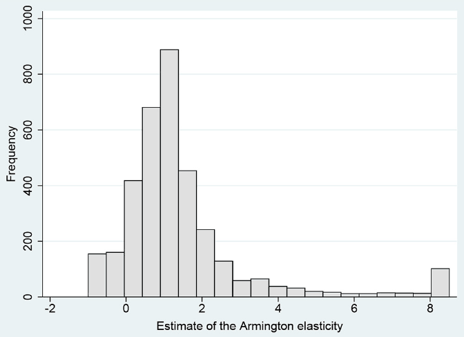
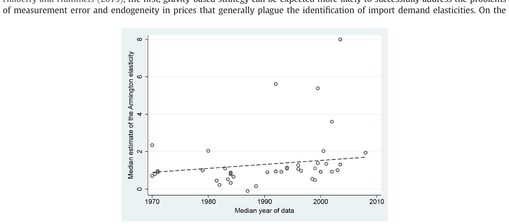
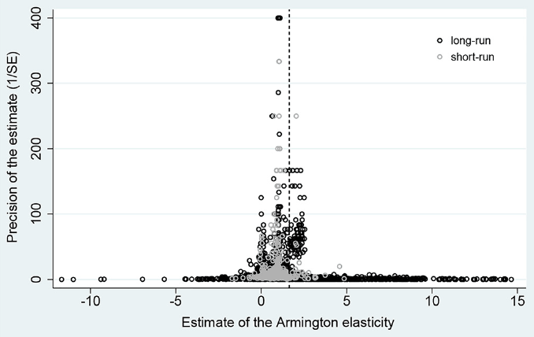

Estimating the Armington Elasticity: The Importance of Study Design and Publication Bias
Josef Bajzik, Tomas Havranek, Zuzana Irsova, and Jiri Schwarz (2020), "Estimating the Armington Elasticity: The Importance of Study Design and Publication Bias." Journal of International Economics 127, 103383. https://doi.org/10.1016/j.jinteco.2020.103383.
Josef Bajzik a,b, Tomas Havranek a, Zuzana Irsova a,*, Jiri Schwarz a,b
a Charles University, Faculty of Social Sciences, Prague, Czech Republic
b Czech National Bank, Czech Republic
Abstract
A key parameter in international economics is the elasticity of substitution between domestic and foreign goods, also called the Armington elasticity. Yet estimates vary widely. We collect 3524 reported estimates of the elasticity, construct 32 variables that reflect the context in which researchers obtain their estimates, and examine what drives the heterogeneity in the results. To account for model uncertainty, we employ Bayesian and frequentist model averaging. To correct for publication bias, we use newly developed non-linear techniques. Our main results are threefold. First, there is publication bias against small and statistically insignificant elasticities. Second, differences in results are best explained by differences in data: aggregation, frequency, size, and dimension. Third, the elasticity implied by the literature after accounting for both publication bias and study quality lies in the range 2.5–5.1 with a median of 3.8.
1. Introduction
How does the demand for domestic versus foreign goods react to a change in relative prices? The answer is central to a host of research and policy problems in international trade and macroeconomics: the welfare effects of globalization (Costinot and Rodríguez-Clare, 2014), trade balance adjustments (Imbs and Mejean, 2015), and the exchange rate pass-through of monetary policy (Auer and Schoenle, 2016), to name but a few. Any attempt to evaluate the effect of tariffs in particular depends crucially on the assumed reaction of relative demand to relative prices. In most models, the reaction is governed by the (constant) elasticity of substitution between domestic and foreign goods. The size of the elasticity used for calibration often drives the conclusions of the model, as shown by Schurenberg-Frosch (2015), who recomputes the results of 50 previously published models using different values of the elasticity. She finds that, with plausible changes in the elasticity, the results change qualitatively in more than half of the cases. As Hillberry & Hummels (2013, p. 1217) put it, “it is no exaggeration to say that [the elasticity] is the most important parameter in modern trade theory.”
Yet no consensus on the magnitude of the elasticity exists. In different contexts, researchers tend to obtain substantially different estimates, as observed by Feenstra et al. (2018) and many commentators before them. In this paper we assign a pattern to these differences, a pattern that we hope will be useful for calibrating models in international trade and macroeconomics. The elasticity of substitution between domestic and foreign goods is commonly called the Armington elasticity, in honor of Armington (1969), who first formulated a theoretical model featuring goods distinguished solely by the place of origin. The first estimates of the elasticity followed soon afterward, and many thousand have been published since. As the Armington-style literature turns 50, the time is ripe for taking stock. We collect 3524 estimates of the elasticity of substitution between domestic and foreign goods and construct 32 variables that reflect the context in which researchers produce their estimates.
A bird's-eye view of the literature (Fig. 1 and Fig. 2) shows four stylized facts, three of which corroborate the common knowledge in the field. First, the estimates of the elasticities vary substantially. A researcher wishing to calibrate her policy model has plenty of degrees of freedom; she can easily find empirical evidence for any value of the elasticity between 0 and 8. Such plausible (that is, justifiable by some empirical evidence) changes in the elasticity can have decisive effects on the results of the model. For example, Engler and Tervala (2018) show that changing the elasticity from 3 to 8 more than doubles the estimated welfare gains from the Transatlantic Trade and Investment Partnership. Second, the median estimated elasticity in the literature is 1, and many estimates are close to that value. Third, the reported elasticity seems to be increasing in time, but it is not clear whether the apparent trend reflects fundamental changes in preferences or improved data and techniques used by more recent studies.
Finally, the fourth stylized fact is that newer studies show more disagreement on the value of the elasticity of substitution. That is, instead of converging to a consensus value, the literature diverges. The increased variance in the estimated elasticities provides additional rationale for a systematic evaluation of the published results. For this evaluation we use the methods of meta-analysis, which were originally developed in (or inspired by) medical research. Recent applications of meta-analysis in economics include Imai et al. (2020) on the present bias, Card et al. (2018) on the effectiveness of active labor market programs, and Havranek and Irsova (2017) on the border effect in international trade. An important problem inherent in meta-analysis is model uncertainty because for many control variables capturing study design, little theory exists that can help us determine whether they should be included in the baseline model. To address this issue, we use both Bayesian (Raftery et al., 1997; Eicher et al., 2011) and frequentist (Hansen, 2007; Amini and Parmeter, 2012) methods of model averaging (Steel, 2020, provides an excellent description of these techniques).
Meta-analysis also allows us to correct for potential publication bias in the literature. Publication bias arises when, holding other aspects of study design constant, some results (for example, those that are statistically insignificant at standard levels or have the “wrong” sign) have a lower probability of publication than other results (Stanley, 2001).1 In the context of the elasticity of substitution, it is safe to assume that its sign is positive: a negative value is not compatible with any commonly applied model of preferences. Similarly, it is difficult to interpret a zero elasticity. Thus, from the point of view of an individual study, it makes sense not to report such unintuitive estimates—and instead find a specification where the elasticity is positive—because non-positive elasticity suggests that something is wrong with the data or the model. Nevertheless, non-positive estimates will occur from time to time simply because of sampling error; for the same reason, researchers will sometimes obtain estimates much larger than the true value. If large estimates (which can be intuitive) are kept but non-positive ones are omitted, an upward bias arises. Paradoxically, publication bias can thus improve inferences drawn from some individual studies (since they avoid making central conclusions based on negative or zero elasticities) but inevitably distorts inference drawn from the literature as a whole. Ioannidis et al. (2017) show that, in economics, the effects of publication selection are dramatic and exaggerate the mean reported estimate twofold.
To correct for publication bias, we use meta-regression techniques based on Egger et al. (1997) and their extensions together with three new non-linear techniques developed specifically for meta-analysis in economics. The first one is due to Ioannidis et al. (2017) and relies on estimates that are adequately powered. The second technique was developed by Andrews and Kasy (2019) and employs a selection model that estimates the probability of publication for results with different p-values. The third non-linear technique is the so-called stem-based method by Furukawa (2019), a non-parametric estimator that exploits the variance-bias trade-off. In all the models we run, linear or non-linear, Bayesian or frequentist, we find evidence of strong publication bias in the estimates of the long-run Armington elasticity. The bias results in an exaggeration of the mean estimate by more than 50%. In contrast, we find no publication bias among the estimates of the short-run elasticity. One explanation consistent with these results is that the short-run elasticity is commonly believed to be small and less important for policy questions, so there are few incentives to discriminate against insignificant (and even potentially negative) estimates of the elasticity. Large estimates of the long-run elasticity, in contrast, appear intuitive and desirable to many researchers (see, for example, the discussion in McDaniel and Balistreri, 2003; Hillberry et al., 2005).
Our findings indicate that study characteristics are systematically associated with reported results. Among the 32 variables we construct, the most important in model averaging are the ones related to the data used in the estimation: data frequency (monthly, quarterly, or annual), data dimension (time series, cross section, or panel), and data size. We also find systematic correlation between measures of quality and the magnitude of the reported elasticity. Studies and estimates of higher quality (as measured by the number of citations, publication in a refereed journal, quality of the journal, and preferences of the authors of the primary studies) tend to report larger estimates.
While publication selection creates an upward bias, estimates of lower quality seem to yield a downward bias. We exploit our large dataset and the relationships unearthed by Bayesian model averaging to compute a mean effect corrected for publication bias but conditional on the design of the most reliable studies. In an alternative approach, we divide the estimates into groups based on the quality of the journal and the preferences of the authors themselves, while still controlling for publication bias. The implied Armington elasticity in both approaches lies in the range 2.5–5.1 with a median estimate at 3.8, and we interpret the number and the interval as our best guess (based on the available empirical literature published during the last five decades) on how to calibrate a model that allows for only one parameter to govern the aggregate elasticity of substitution between domestic and foreign goods—for example, an open economy dynamic stochastic general equilibrium model of the type used in many central banks. We also report implied mean elasticities for individual countries.

The remainder of the paper is structured as follows. Section 2 describes how we collect data from primary studies. Section 3 tests for publication bias in the literature. Section 4 explores heterogeneity and computes the range of elasticities implied by correction for publication bias and quality. Section 5 concludes the paper. An online appendix at meta-analysis.cz/armington provides additional results, data, and codes.
2. Collecting the elasticity dataset
Two broad strategies have been used in the literature to estimate a parameter that is often given a structural interpretation as the Armington elasticity—or, more generally, trade cost elasticity. Using the first strategy, researchers regress bilateral trade flows on a measure of trade costs, typically tariffs (for details, see Costinot and Rodríguez-Clare, 2014; Head and Mayer, 2014). Using the second strategy, researchers regress the ratio of imports to domestic consumption on the ratio of domestic prices to import prices (for example, Gallaway et al., 2003; Feenstra et al., 2018). Both strategies have their pros and cons. As pointed out by Hillberry and Hummels (2013), the first, gravity-based strategy can be expected more likely to successfully address the problems of measurement error and endogeneity in prices that generally plague the identification of import demand elasticities. On the other hand, Hillberry and Hummels (2013) also note that a large literature on the political economy of trade protection argues that tariffs are correlated with potential import penetration (for instance, Trefler, 1993; Grossman and Helpman, 1994; Goldberg and Maggi, 1999), which can complicate the identification of the elasticity in gravity models. Perhaps more importantly, the gravity-based strategy yields a parameter that can be interpreted as the elasticity of substitution among foreign varieties, not the elasticity of substitution between domestic and (combined) foreign varieties that is more relevant for welfare analysis (Costinot and Rodríguez-Clare, 2018).

Our focus in this paper is the elasticity of substitution between domestic and foreign goods, and we therefore collect estimates obtained using the second strategy described above. Conceptually, one could collect estimates stemming from both strategies and conduct a more general meta-analysis of the trade cost elasticity, but we believe these two streams of literature are distinct enough to be best analyzed separately. The interpretation of the price elasticity of import demand as the Armington elasticity follows from assuming a constant elasticity of substitution subutility function in modeling demand for home and foreign goods and taking logs of the corresponding first-order condition (see, for example, Blonigen and Wilson, 1999, for a simple derivation). Individual studies differ greatly in their implementation of this general strategy, and we control for the differences in data and methodology in Section 4. Indeed, assigning a pattern to the observed heterogeneity in the estimates of the elasticity is in many ways more interesting than searching for the mean elasticity, especially given the structural differences in the data sets (for instance, across countries and sectors) used by individual researchers.
While we deliver the first meta-analysis of the elasticities obtained using the second strategy, a meta-analysis has already been conducted on the first strategy. Head and Mayer (2014) collect 744 gravity-based estimates of the trade cost elasticity from 32 papers and report a preferred estimate of 5. In a simple model (see Costinot and Rodríguez-Clare, 2014, for more details) the Armington elasticity equals the trade cost elasticity plus one.2 For two reasons we thus consider 6 to form the upper bound for a reasonable estimate of the mean Armington elasticity. First, Feenstra et al. (2018) report that the elasticity of substitution among foreign varieties (implied by gravity-based estimates) is for many sectors larger than the elasticity between domestic and foreign varieties (the goal of our study), often by a factor of two. Second, due to publication selection bias the typical coefficient in economics is exaggerated also by a factor of two (Ioannidis et al., 2017). Head and Mayer (2014) report the meta-analysis as a brief supplement to their comprehensive handbook chapter on gravity equations and do not correct for publication bias; in fact, they collect only estimates that are statistically significant. Hence, without a further analysis, 3 could represent a plausible prior for the mean Armington elasticity.
We need each study to report a measure of uncertainty of its estimates. Such a measure, which is necessary to test for the potential presence of publication bias in the literature, can be either the standard error or other metrics recomputable to the standard error. This requirement prevents us from using a dozen empirical papers, including the highly cited contribution by Broda and Weinstein (2006). For similar reasons, we drop a few estimates for which uncertainty measures are incorrectly reported (for example, when the reported standard errors are negative or when the reported confidence intervals do not include the point estimate). The final dataset is unbalanced because some studies report more estimates than other studies. We choose to include all the reported estimates because it is often unclear which estimate is the one most preferred by the author; moreover, including more estimates obtained using alternative methods or datasets increases the variation we can exploit by meta-analysis.
The first step in a meta-analysis is the search for relevant studies. Building on the comprehensive surveys by McDaniel and Balistreri (2003) and Cassoni and Flores (2008), we design our search query in Google Scholar in a way that shows the well-known studies estimating the Armington elasticity among the first hits. The final query along with the dataset is available online at meta-analysis.cz/armington. We also go through the references of the most recent studies and obtain other papers that might provide empirical estimates of the elasticity. While the keywords we use are specified in English, we do not exclude any study based on the language of publication: several papers written in Spanish (e.g. Hernandez, 1998; Lozano Karanauskas, 2004) and Portuguese (Faria and Haddad, 2014) are included. We add the last study in March 2018 and terminate the literature search. The final set of studies that fulfill all requirements for meta-analysis is reported at meta-analysis.cz/armington; our sample consists of 3524 estimates from 42 papers. In data collection and other stages of the analysis we follow the recent guidelines for meta-analyses in economics (Harvanek et al., 2020).
The oldest study in our sample was published in 1977 and the most recent one in 2018, thereby covering more than 40 years of research. The mean reported elasticity is 1.45. Given that there are a few dramatic outliers in our data (their values climb to approximately 50 in absolute value), we winsorize the estimates at the 2.5% level; the mean is little affected by winsorization (it decreases from 1.53 to 1.45), and our results hold with alternative winsorizations at the 1% and 5% levels. Approximately 10% of the estimates are negative and commonly believed to occur due to misspecifications in the demand function and problems with import prices (Shiells et al., 1986). More than half of the estimates are larger than unity, which suggests that domestic and foreign goods can often be expected to form gross substitutes. Nevertheless, estimates differ greatly both within and between individual studies and home countries, as Fig. A.1 and Fig. A.2 in the Appendix demonstrate. To assign a pattern to this variance, for each estimate we collect 32 explanatory variables describing various characteristics of data, home countries, methods, models, and quality; these sources of heterogeneity are examined in detail in Section 4.
| No. of obs. | Unweighted Mean | Unweighted 95% conf. Int. | Weighted Mean | Weighted 95% conf. Int. | |||
|---|---|---|---|---|---|---|---|
| Temporal dynamics | |||||||
| Short-run effect | 556 | 0.88 | 0.83 | 0.93 | 0.91 | 0.85 | 0.98 |
| Long-run effect | 2968 | 1.56 | 1.49 | 1.63 | 1.67 | 1.60 | 1.74 |
| Data characteristics | |||||||
| Monthly data | 488 | 1.04 | 0.97 | 1.11 | 1.18 | 1.12 | 1.24 |
| Quarterly data | 745 | 1.22 | 1.09 | 1.34 | 2.64 | 2.41 | 2.87 |
| Annual data | 2291 | 1.62 | 1.54 | 1.70 | 1.32 | 1.25 | 1.40 |
| Structural variation | |||||||
| Primary sector | 366 | 0.83 | 0.70 | 0.95 | 0.73 | 0.61 | 0.85 |
| Agriculture, forestry, and fishing | 260 | 0.92 | 0.77 | 1.06 | 0.77 | 0.63 | 0.91 |
| Mining and quarrying | 103 | 0.58 | 0.33 | 0.84 | 0.38 | 0.14 | 0.62 |
| Secondary sector | 3044 | 1.46 | 1.40 | 1.52 | 1.40 | 1.34 | 1.46 |
| Manufacturing | 2963 | 1.46 | 1.40 | 1.52 | 1.40 | 1.34 | 1.46 |
| Utilities | 54 | 1.85 | 1.29 | 2.40 | 1.84 | 1.39 | 2.28 |
| Construction | 24 | 0.60 | 0.10 | 1.10 | 0.67 | 0.15 | 1.19 |
| Tertiary sector | 75 | 1.42 | 1.13 | 1.71 | 1.25 | 0.90 | 1.61 |
| Trade, catering, and accommodation | 23 | 0.97 | 0.65 | 1.28 | 0.84 | 0.53 | 1.16 |
| Transport, storage, and communication | 16 | 1.92 | 0.75 | 3.09 | 2.10 | 0.71 | 3.50 |
| Finance, insurance, real estate, and business | 8 | 1.07 | 0.43 | 1.72 | 0.57 | 0.03 | 1.10 |
| Services | 21 | 1.63 | 1.35 | 1.92 | 1.47 | 1.19 | 1.76 |
| Developing countries | 856 | 1.83 | 1.69 | 1.96 | 1.54 | 1.43 | 1.66 |
| Developed countries | 738 | 1.24 | 1.16 | 1.32 | 1.24 | 1.15 | 1.34 |
| Publication status | |||||||
| Published papers | 1385 | 1.23 | 1.13 | 1.32 | 1.65 | 1.52 | 1.78 |
| Unpublished papers | 2139 | 1.60 | 1.53 | 1.68 | 1.61 | 1.53 | 1.68 |
| All estimates | 3524 | 1.45 | 1.40 | 1.51 | 1.64 | 1.56 | 1.71 |
Notes: The definitions of subsets are available in Table A.1. Weighted = estimates weighted by the inverse of the number of estimates reported per study. Several elasticities in our dataset are estimated for all industries or across more sectors; these observations are excluded from the table.
Table 1 provides a first indication of the potential causes of heterogeneity. We compute the mean values of the Armington elasticity estimates for different groups of data based on temporal dynamics (short- or long-run),3 data frequency, structural variation, and publication characteristics. To account for the unbalancedness of our dataset, we also compute mean estimates weighted by the inverse of the number of estimates reported per study so that each study gets the same weight. The table shows that the long-run elasticities are approximately twice as large as the short-run elasticities, which corroborates the arguments of Gallaway et al. (2003) and the common notion that short-run elasticities are smaller. Quarterly and annual data are typically used to capture the long-run effects (Gallaway et al., 2003) and thus can be expected to produce larger elasticities than monthly data, which is supported by the statistics shown in the table.
The smaller elasticities reported for the primary sector (with respect to other sectors) suggest that the products of agriculture, forestry, fishing, mining, and quarrying are more difficult to substitute with their foreign alternatives. This subsample is dominated by estimates related to agriculture, for which consumers' preferences may display a larger home-country bias. But on the whole the result is puzzling, enabled perhaps by the relatively small number of elasticities for the primary sector, and in any case disappears later in the analysis when we account for the quality of individual estimates. In contrast, the largest elasticities are typically found for utilities (approximately 1.85) and transport, storage, and communication (1.92).4 The elasticity also tends to be 50% larger for developing countries than for developed countries. Finally, although the simple means suggest a difference between the typical results of published and unpublished papers, the weighted means, in which each study has the same weight, suggest that the publication process is not associated with the magnitude of the estimates of the Armington elasticity. This simple analysis suggests there is potential for systematic differences among the reported elasticities, but any particular conclusion can be misleading without accounting for the correlation between individual aspects of data and methodology, which we address in Section 4. It can also be misleading without correcting for publication bias, and we turn to this problem in the following section.

3. Testing for publication Bias
Publication bias is widespread in science, and economics is no exception: Ioannidis et al. (2017) document that the typical estimate reported in economics is exaggerated twofold because of publication selection.5 Publication selection arises because of the general preference of authors, editors, and referees for estimates that have the “right” sign and are statistically significant. Of course, this is not to say that publication selection equals cheating: in contrast, it makes sense for (and improves the value of) an individual study not to focus on estimates that are evidently wrong. But when most authors follow the strategy of ignoring estimates that have the “wrong” sign or are statistically insignificant, our inference from the literature as a whole (and also from many individual studies) becomes distorted. Given the degrees of freedom available to researchers in economics, estimates with the “right” sign and statistical significance at the 5% level are almost always possible to obtain after a sufficiently large number of specifications have been tried. A useful analogy provided by McCloskey and Ziliak (2019) is the Lombard effect, in which speakers increase their vocal effort in the presence of noise: given noisy data or estimation techniques, the researcher has more incentives to search through more specifications for a significant effect. When statistical significance becomes the implicit requirement for publication, significance will be produced but will no longer reflect what the statistical theory expects of it.
A conspicuous feature of the Armington elasticity is that it must be positive if both domestic and foreign goods are useful to the consumer. Therefore, from the very beginning, the literature has shunned negative and zero estimates as clear artifacts of data or method problems. One of the first studies, Alaouze (1977, p. 8), notes, “we shall concentrate on the ...[industries]... for which the elasticity of substitution has the correct [positive] sign.” Among the latest studies, Feenstra et al. (2018, p. 144) find that the estimated elasticity is negative for some varieties and isolate them from the dataset: “these data are faulty or incompatible with our model.” As we have noted, this approach can improve the inference drawn from an individual study but generally creates a bias. Given the inherent noise in the data, estimated elasticities for some industries or specifications will always be insignificant, negative, or both. For other industries or specifications, the same noise produces estimates that are much larger than the true effect. However, no upper bound exists that would immediately deem elasticities implausible; some domestic and foreign goods can be perfectly substitutable in theory. Therefore, the large estimates will be kept in the paper and interpreted. This psychological asymmetry between zero and infinity coupled with inevitable imprecision in data and estimation creates publication bias. One apparent solution is symmetrical trimming: when the authors ignore 10 negative or insignificant estimates, they should also ignore the 10 largest positive estimates. Winsorizing would be better still, but it is rarely employed in practice.
A common tool used to assess the extent of publication bias is the so-called funnel plot (Egger et al., 1997). The funnel plot shows the magnitude of the estimated effect on the horizontal axis and the precision of the estimate (the inverse of the standard error) on the vertical axis. There should be no relation between these two quantities because virtually all techniques used by the researchers to estimate the Armington elasticity guarantee that the ratio of the estimate to its standard error has a symmetrical distribution (typically a t-distribution). Therefore, regardless of their magnitude and precision, the estimates should scatter randomly around the true mean effect. With decreasing precision, the estimates become more dispersed around the true effect and thus form a symmetrical inverted funnel. In the presence of publication bias, the funnel becomes either hollow (because insignificant estimates are omitted), asymmetrical (because estimates of a certain sign or size are excluded), or both.
The funnel plot in Fig. 3 gives us a mixed message, as we show short- and long-run estimates of the Armington elasticity separately. The short-run elasticities are symmetrically distributed around their most precise estimates, which are slightly less than 1. The long-run elasticities, in contrast, form an asymmetrical funnel: the most precise estimates are also close to 1, but among imprecise estimates, there are many more that are much larger than 1 compared to those that are smaller than 1. This finding is consistent with no publication selection among short-run elasticities and publication selection against negative and insignificant elasticities among long-run elasticities. Nevertheless, the funnel plot is only a simple visual test, and the dispersion of the long-run estimates could suggest heterogeneity in data and methods, the other systematic factor driving the estimated coefficients. Regression-based funnel asymmetry tests provide a more concrete way to test for publication bias. As we have noted, if publication selection is present, the reported estimates and standard errors are correlated (Stanley, 2005; Havranek, 2010; Havranek and Irsova, 2011; Havranek et al., 2018b):
where denotes i-th estimate of the Armington elasticity with the standard error estimated in the j-th study; is the error term. is the mean underlying effect beyond publication bias (that is, conditional on maximum precision), and the coefficient on the standard error represents the strength of publication bias. If , no publication bias is present. If , 's and their standard errors are correlated, the correlation can arise either because researchers discard negative estimates of the elasticity (in which case the correlation occurs due to the apparent heteroskedasticity) or because researchers compensate for large standard errors with large estimates of the elasticity (the Lombard effect).
Table 2 presents the results of (1) using various estimation techniques run for three samples: the pooled set of elasticities, short-run elasticities, and long-run elasticities. Panel A uses unweighted data. In the baseline OLS model, the coefficient from (1) is not statistically significant for the short-run sample, and the estimated corrected mean is the same as the simple mean of 0.9. In the sample of long-run elasticities, in contrast, we find strong publication bias that decreases the underlying mean from 1.56 (the uncorrected mean) to 0.9 (the mean corrected for publication bias). The result for a pooled sample of short- and long-run elasticities is close to that of long-run elasticities because long-run elasticities dominate the dataset.
| All | Short-run | Long-run | |
|---|---|---|---|
| PANEL A: Unweighted estimations | |||
| OLS | |||
| SE (publication bias) | 0.808*** | 0.0791 | 0.805*** |
| (0.0652) | (0.0826) | (0.0630) | |
| Constant (effect beyond bias) | 0.873*** | 0.867*** | 0.901*** |
| (0.133) | (0.0249) | (0.168) | |
| Fixed effects | |||
| SE (publication bias) | 0.621*** | −0.00578 | 0.627*** |
| (0.0588) | (0.104) | (0.0580) | |
| Constant (effect beyond bias) | 1.007*** | 0.883*** | 1.047*** |
| (0.0423) | (0.0192) | (0.0476) | |
| Hierarchical Bayes | |||
| SE (publication bias) | 0.500** | −0.0810 | 0.630*** |
| (0.190) | (0.480) | (0.190) | |
| Constant (effect beyond bias) | 1.200*** | 0.887** | 1.250*** |
| (0.240) | (0.310) | (0.0476) | |
| PANEL B: Weighted OLS estimations | |||
| Weighted by the inverse of the number of estimates reported per study | |||
| SE (publication bias) | 1.017*** | 0.0674 | 0.821*** |
| (0.249) | (0.0721) | (0.139) | |
| Constant (effect beyond bias) | 1.011*** | 0.899*** | 1.134*** |
| (0.254) | (0.0821) | (0.168) | |
| Weighted by the the inverse of the standard error | |||
| SE (publication bias) | 1.559 | 2.698 | 0.906** |
| (0.969) | (2.213) | (0.431) | |
| Constant (effect beyond bias) | 0.761*** | 0.510 | 0.922*** |
| (0.217) | (0.325) | (0.205) | |
| PANEL C: Non-linear estimations | |||
| Weighted average of adequately powered (Ioannidis et al., 2017) | |||
| Effect beyond bias | 1.049*** | 0.872*** | 1.101*** |
| (0.017) | (0.024) | (0.021) | |
| Selection model (Andrews and Kasy, 2019) | |||
| Effect beyond bias | 0.911*** | 0.863*** | 0.943*** |
| (0.015) | (0.018) | (0.021) | |
| Stem-based method (Furukawa, 2019) | |||
| Effect beyond bias | 0.799* | 1.298*** | 0.994*** |
| (0.438) | (0.314) | (0.030) | |
| Observations | 3524 | 556 | 2968 |
Notes: The uncorrected mean of the estimates of the long-run Armington elasticity is 1.56. Panels A and B report the results of regression , where denotes i-th Armington elasticity estimated in the j-th study and denotes the corresponding standard error. All = the entire dataset, Short-run = short-run Armington elasticities, Long-run = long-run Armington elasticities, SE = standard error. Standard errors, clustered at the study and country level, are reported in parentheses (except Hierarchical Bayes, which has posterior standard deviation in parentheses). The available number of observations is reduced for Ioannidis et al. (2017)'s estimation (all 3440; short-run 555; long-run 2885) and Furukawa (2019)'s estimation (all 1850; short-run 105; long-run 965). *p < 0.10, ** p < 0.05, *** p < 0.01. Stars for hierarchical Bayes are presented only as an indication of the parameter's statistical importance to keep visual consistency with the rest of the table.
In the next model, we add study-level fixed effects to the baseline specification, which slightly deepens the difference between the mean short- and long-run effects beyond bias. Finally, for Panel A, we use a multilevel estimation technique that implements partial pooling at the study level and uses the data to influence the pooling weights. Given that the estimated elasticities are nested within each study, hierarchical modeling is a convenient choice to analyze the variance in the elasticities: one can expect that the stochastic term of (1) depends on the design of each individual study and therefore does not have the same dispersion across individual studies. It follows that the regression coefficients are probably not the same across studies. Nevertheless, 's should be related, and the hierarchical modeling treats them as random variables of yet another linear regression at the study level. We apply a hierarchical Bayes model and implement the Gibbs sampler for hierarchical linear models with a standard prior, following Rossi et al. (2005). The hierarchical model corroborates the evidence presented earlier but finds slightly weaker publication bias among the estimates of the long-run elasticity.
Panel B of Table 2 presents weighted alternatives to the baseline OLS model of Panel A. First, the regression is weighted by the inverse of the number of estimates reported by each study, so that both small and large studies are all assigned the same importance. Second, the regression is weighted by the inverse of the standard error so that more precise estimates are assigned greater importance. Panel B shows results that support the conclusions from Panel A. Finally, Panel C shows the latest alternatives to linear meta-analysis models. The problem with the linear regression that we have used so far is the implicit assumption that publication bias is a linear function of the standard error. If the assumption does not hold, our conclusion concerning publication bias can be misleading. Here, we apply three non-linear techniques that relax this assumption. The corrected means of both the short- and long-run Armington elasticity remain close to unity in all three alternative approaches: the weighted average of adequately powered estimates by Ioannidis et al. (2017), the stem-based method by Furukawa (2019), and the selection model by Andrews and Kasy (2019).
Based on a survey involving more than 60,000 estimates, Ioannidis et al. (2017) document that the median statistical power among the published results in economics is 18%. They show how low power is associated with publication bias and then propose a simple correction procedure that focuses on the estimates with power above 80%. Monte Carlo simulations presented in Ioannidis et al. (2017) suggest that this simple technique outperforms the commonly used meta-regression estimators. The intuition of the model presented by Furukawa (2019) rests on the fact that the most precise estimates suffer from little bias: with very small standard errors, the authors can easily produce estimates that are statistically significant. While previous authors have recommended meta-analysts to focus on a fraction of the most precise estimates in meta-analysis (for example, Stanley et al., 2010), Furukawa (2019) finds a clever way to estimate this fraction based on exploiting the trade-off between bias and variance (omitting studies increases variance). Andrews and Kasy (2019) use the observation reported by many researchers (for instance, Havranek, 2015; Brodeur et al., 2016) that standard cut-offs for the p-value (0.01, 0.05, 0.1) are associated with jumps in the distribution of reported estimates. Andrews and Kasy (2019) build on Hedges (1992) and construct a selection model that estimates publication probability for each estimate in the literature given its p-value. They show that, in several areas, the technique gives results similar to those of large-scale pre-registered replications.
Several important findings can be distilled from the estimations reported in Table 2. First, we find publication bias among long-run elasticities but not among short-run elasticities. (Non-linear techniques find smaller bias than linear techniques, but only slightly.) One explanation consistent with this result is that short-run elasticities are typically deemed less important than long-run elasticities, especially for policy purposes. They are often reported only as complements to the central findings of the paper. It can take time before consumers shift their demand between domestic and foreign goods; consequently, insignificant estimates of the short-run elasticity are more likely to survive the publication process than insignificant estimates of the long-run elasticity. Second, publication bias inflates the mean estimate of the long-run Armington elasticity by at least 50%, which can have a strong impact on the results of a model informed by the empirical literature in terms of the calibration of the elasticity. Third, the large difference between the short- and long-run elasticities reported in Table 1 (and observed in many studies, see Gallaway et al., 2003) is all but erased once publication bias is taken into account. In sum, we find robust evidence of publication bias in this literature. However, some of the apparent correlations between the estimated elasticities and their standard errors can be due to data and method heterogeneity. We turn to this issue in the next section.
4. Why elasticities vary
4.1. Potential factors explaining heterogeneity
Three reasons for the systematic differences in the estimates of the Armington elasticity have been frequently discussed in the literature. First, studies using disaggregated data are often observed to yield larger estimates than studies using aggregate data (Imbs and Mejean, 2015). Second, cross-sectional studies tend to yield larger estimates than time-series studies (Hillberry and Hummels, 2013). Third, multi-equation estimation techniques typically give larger estimates than single-equation techniques (Goldstein and Khan, 1985). Many literature reviews (including Cassoni and Flores, 2008; Marquez, 2002; McDaniel and Balistreri, 2003), moreover, stress other characteristics of estimates and studies that can significantly influence the results. We presented the first attempt to shed light on the sources of heterogeneity in Table 1. To investigate the heterogeneity among
the estimates of the Armington elasticity more systematically, we codify 31 characteristics of study design in addition to the standard error and augment Eq. (1) by adding these characteristics as explanatory variables.
Table A.1 in the Appendix lists all the codified variables, their definitions and summary statistics, including the simple mean, standard deviation, and mean weighted by the inverse of the number of observations reported in a study. We focus exclusively on long-run elasticities in the analysis, because these are the ones important for welfare analysis, and predictor coefficients are unlikely to be the same for short- and long-run estimates. For ease of exposition, we divide the variables into groups reflecting data characteristics, structural variation, estimation techniques, and publication characteristics potentially related to quality that are not captured by data and estimation characteristics.
Data characteristics.
Many studies (Feenstra et al., 2018; McDaniel and Balistreri, 2003; Welsch, 2008, among others) argue that because intra-industry diversity decreases with an increasing level of sectoral aggregation, more aggregated data should yield smaller elasticities. Feenstra et al. (2018) note that some recent macro-studies (Bergin, 2006; Heathcote and Perri, 2002) estimate the aggregate elasticities around unity, while studies focusing on individual product groups (Broda and Weinstein, 2006; Imbs and Mejean, 2015) imply much stronger responses. McDaniel and Balistreri (2003) compare two studies on US data that use 3-digit SIC level (Reinert and Roland-Holst, 1992) and 4-digit SIC level (Gallaway et al., 2003) aggregations and come to the same conclusion: higher disaggregation brings higher substitutability. We codify the data disaggregation variable according to the SIC classification. Fully aggregated, whole-economy data acquire the value of 1; in contrast, fully disaggregated product-level data acquire the value of 8. Given the consensus in the literature, we expect the variable to show a positive association with the reported elasticities. Furthermore, in some papers (such as Aspalter, 2016; Mohler and Seitz, 2012), the level of aggregation of the input data differs from the level of aggregation of the reported results. Imbs and Mejean (2015) argue that a pooled estimate that ignores heterogeneity across sectors tends to be biased downwards. To reflect the problem of aggregating the results, we create an additional variable based on the same principles as the variable for data aggregation.
Another commonly discussed issue is data frequency, which is related to the short- or long-run nature of the elasticity. Cassoni and Flores (2008) show that aggregation from monthly to quarterly data removes short-term adjustment patterns, such as overshooting (Cassoni and Flores, 2010) or J-curve effects (Backus et al., 1994). They also note that monthly data often contain atypical observations that could misrepresent the underlying trade data. Gallaway et al. (2003), on the other hand, estimate long-run elasticities based on monthly and quarterly data and find no systematic difference in the estimates. Given that quantity measures are notoriously noisy, Hillberry and Hummels (2013) state that the measurement error often becomes exacerbated with monthly or quarterly data and high product disaggregation. The use of quarterly instead of yearly data may be necessary to gain a sufficiently large dataset, but Hertel et al. (1997) argue that problems associated with quarterly data could lead to overly inelastic estimates. A number of studies, including Aspalter (2016), Olekseyuk and Schurenberg-Frosch (2016), and Feenstra et al. (2018), use annual data. Aspalter (2016) also suggests that the annual frequency of data often leads to a more consistent cross-country dataset.
We further distinguish among time series, cross-section, and panel data, using panel data as the reference category. The survey by McDaniel and Balistreri (2003) reports that cross-sectional data are associated with larger reported elasticities because cross-sectional estimates also consider supply conditions. Cassoni and Flores (2008), however, argue that the conclusion of McDaniel and Balistreri (2003) stems from comparing results based on heterogeneous analyses and data, and point out that the impact of data cross-sectionality depends on the correct specification of the model and the estimation technique employed. The variable data period reflects how estimates differ when obtained over longer time periods, while the variable data size captures the potential effects of small-sample bias. We also control for the age of the data by including a variable that reflects the midpoint year of the sample (variable midyear) with which the Armington elasticity is estimated. Fig. 2 suggests that the elasticity is increasing in time (and some studies, for example Schurenberg-Frosch, 2015; Welsch, 2008, observe a similar pattern). In this vein, Hubler and Pothen (2017) argue that globalization might have increased the Armington elasticity by decreasing the heterogeneity of products and reducing the market power of individual countries.
Structural variation.
The elasticity of substitution might depend systematically on the characteristics of the product, industry, and country in question. Blonigen and Wilson (1999) suggest that with greater physical differences, the elasticity of substitution between products decreases. Shiells et al. (1986) and more recent papers such as Faria and Haddad (2014), Nemeth et al. (2011), and Saikkonen (2015) provide evidence of how the Armington elasticity differs across industries. Moreover, Saito (2004) shows that heterogeneous goods (e.g., final products such as automobiles or medical equipment) are more difficult to substitute across countries than more homogenous goods (e.g., intermediate products such as glass or metals). Because we do not have enough variation in our dataset to control for the many individual product categories or industries (if all these controls were included, collinearity would skyrocket), we control for sectoral differences by dividing the sample into three groups: the primary sector with industries related to raw materials, the secondary sector with manufacturing industries, and the tertiary sector of services.
We also control for the characteristics of the country for which the elasticity is estimated (the "home" country). Developing countries can be expected to face a larger pool of substitutable products abroad because the rest of the world encompasses the production of all levels of technology. In contrast, for developed countries with better production technologies, it might be more difficult to find adequate substitutes abroad. Similarly, in the generalized ideal variety model by Hummels and Lugovskyy (2009), rich countries end up with a lower Armington elasticity. Moreover, Kapuscinski and Warr (1999) note that developing countries often provide poor data, and the resulting biases could lead to larger elasticities. We divide the countries into two categories: a group of developed countries, which includes Central and Western Europe, North America, Australia, New Zealand, and Japan; and a group of developing countries, which covers the rest of Asia, Latin America, and Africa.
It has been shown in the literature that even physically identical goods can be differentiated by aspects such as availability, customer service, and perception of quality. Linder (1961) suggests that countries with similar income per capita should trade more easily because their consumers have similar tastes, as reflected in the production of goods in each country Francois and Kaplan, 1996). Similar results are reported by Adao et al. (2017). Ideally, to capture these features of consumers' preferences, we would like to create a variable representing the income dissimilarity of the home country and the corresponding foreign country. Because this bilateral approach is not feasible for the Armington elasticity literature, we use another representation of consumer preferences: we include a proxy variable national pride to capture consumer bias for home goods over foreign ones (Trefler, 1995; Kehoe et al., 2017). The variable is constructed as the percentage of 'very proud' answers to the question 'How proud are you of your country?' from the World Values Survey (Inglehart et al., 2014).
Next, the literature has identified market size as a potential determinant of the Armington elasticity. Hummels and Lugovskyy (2009) employ a generalized ideal variety model to argue that the elasticity can be expected to be larger in larger countries, because in the model the marginal utility of new varieties decreases with increasing market size. To proxy for market size, we use GDP for the midpoint of the data period used in the study. Moreover, trade barriers and other extra transaction costs associated with crossing the border have also been considered an important determinant of the Armington elasticity (Lopez and Pagoulatos, 2002). A large literature on the political economy of trade protection argues that tariffs are correlated with potential import penetration (for instance, Trefler, 1993; Grossman and Helpman, 1994; Goldberg and Maggi, 1999), which implies that tariffs could be larger in countries with larger substitution elasticities. These trade barriers are captured by variables tariff (representing the tariff rate) and non-tariff barriers (representing the cost to import); all these data are obtained from WB (2018).
According to Parsley and Wei (2001), contracting costs and insecurity represent other potential determinants that affect cross-country trade and possibly the Armington elasticity. We approximate these additional trade frictions by the volatility of the exchange rate in the home country versus the US dollar (variable FX volatility). Parsley and Wei (2001) suggest that exchange rate volatility may not only contribute to cross-border market insecurities but also explain the price dispersion of similar goods across the border. Finally, we account for information barriers and use the number of broadband subscriptions per 100 people as a measure of internet usage.
Estimation technique.
A large variety of models and methods exist to estimate the Armington elasticity. To simplify, denoting the ratio of imports to domestic consumption as , the ratio of domestic prices to import prices as , we obtain the static model , where is the Armington elasticity, is a constant, and is an error term. Static models constitute approximately 26% of our dataset. Another category labeled distributed lag and trend model includes elasticities estimated using distributed lag models (Tourinho et al., 2003) and models with a time trend variable added (Lundmark and Shahrammehr, 2012): . The partial adjustment model, on the other hand, allows for a non-instantaneous adjustment of the demand structure to the changes of the relative prices (for example Ogundeji et al., 2010) by adding the lagged dependent variable among the explanatory variables and reads ; the long-run is then computed from the coefficients (Alaouze, 1977, shows that the omission of the lagged dependent variable in cases where it is significant biases the estimates downwards).
If the corresponding levels of time series are not stationary but cointegrated, authors also use an error-correction model to estimate the elasticity (such as Gan, 2006, does); then, the model reads ; the long-run is then computed from the coefficients. Several studies, including Corado and de Melo (1983), Feenstra et al. (2018), and Saikkonen (2015), employ different forms of non-linear models. The non-linear model category constitutes 33% of our dataset. There is no unifying specification presentable in this case, as the individual approaches differ. The reference category for the group of dummy variables describing the models used to estimate the Armington elasticity is the variable other models, which covers the rest of the used approaches that do not fall under any of the above-mentioned categories.
To account for the potential effect of estimation techniques, we group the most frequently used methods of estimation into five categories: OLS estimation together with the GLS estimator (variable OLS), Cochrane-Orcutt estimation together with the FGLS (variable CORC), two-stage least squares and related techniques (variable TSLS), a separate group of GMM estimates, and all other methods, which represent the reference category for this group of dummies. We also include a control that equals one if the specification includes some measures of import constraints. Alaouze (1977) stresses that quantitative and tariff quota restrictions could bias the estimates of the elasticity because importers cannot fully utilize the advantages of price changes or must pay a fee when exceeding a certain amount of imported goods. Another aspect of study design is whether the authors control for seasonality in the demand function (Tourinho et al., 2010), which is a particularly important characteristic of agricultural products. Seasonality is commonly captured by quarterly dummies (see, for example, Ogundeji et al., 2010).
Publication characteristics.
Despite the large number of variables we collect, these variables might not capture all aspects of study quality. Therefore, we also employ several publication characteristics that can be expected to be correlated with the unobserved features of the quality of the paper. To see if published studies yield systematically different results, we include a dummy variable that equals one if the study is published in a peer-reviewed journal. To take into account the differences in the quality of publication outlets, we include the discounted recursive RePEc impact factor of the respective study (this impact factor is available for both journals and working paper series). Finally, for each study, we create a variable reflecting the logarithm of the number of Google Scholar citations normalized by the number of years since the first draft of the study appeared in Google Scholar.
4.2. Estimation
To relate the variables introduced above to the magnitude of the estimated Armington elasticities, one could run a standard regression with all the variables. But such an estimation would ignore model uncertainty inherent in meta-analysis: while we have a strong rationale to include some of the variables, others are considered mainly as controls for which there is no theory on how they could affect the results of studies estimating the Armington elasticity. To address model uncertainty, we employ Bayesian model averaging (BMA). BMA runs many regressions with different subsets of the possible combinations of explanatory variables. We do not estimate all possible combinations but employ Markov chain Monte Carlo (specifically, the Metropolis-Hastings algorithm of the bms package for R by Zeugner and Feldkircher, 2015), which walks through the most likely models. In the Bayesian setting, the likelihood of each model is represented by the posterior model probability. The estimated BMA coefficients for each variable are represented by posterior means and are weighted across all models by their posterior probability. Each coefficient is then assigned a posterior inclusion probability that reflects the probability of the variable being included in the underlying model and is calculated as the sum of posterior model probabilities across all the models in which the variable is included. Further details on BMA can be found in, for example, Raftery et al. (1997) or Eicher et al. (2011). BMA has been used in meta-analysis, for example, by Havranek et al. (2015, 2018a, 2018c).
In the baseline specification, we employ the unit information g-prior prior which is recommended by Eicher et al. (2011) and gives the prior that the regression coefficient is zero the same weight as one observation of the data. This agnostic prior reflects our lack of knowledge regarding the probability of individual parameter values. Next, because we use 32 variables, collinearity is a potentially important problem in our analysis. For this reason, we use the dilution prior put forward by George (2010). The dilution prior adjusts model probabilities by multiplying them by the determinant of the correlation matrix of the variables included in the model. If the model under consideration features little collinearity, the determinant will be close to 1, and the model will receive full weight. In contrast, if the model includes highly collinear variables, the determinant will be close to zero, and the model will receive little weight. The dilution prior, which alleviates but does not fully address collinearity, has already been applied in economics by Hasan et al. (2018), but has not yet been used in meta-analysis.
We use unweighted data to estimate the baseline but later provide weighted alternatives to evaluate the robustness of our results. Furthermore, as another robustness check, we follow Ley and Steel (2009) and apply the beta-binomial random model prior, which gives the same weight to each model size, as well as Fernandez et al. (2001), who use the so-called BRIC g-prior. In addition, to avoid using priors entirely we also apply frequentist model averaging (FMA). Following Hansen (2007), we use Mallow's criterion for model averaging and the approach of Amini and Parmeter (2012) toward the orthogonalization of the covariate space. Amini and Parmeter (2012) provide a comprehensive comparison of different averaging techniques, including Mallow's weights and other frequentist alternatives.
4.3. Results
Fig. 4 visualizes the results of Bayesian model averaging. The columns of the figure denote the individual regression models, and the column width indicates the posterior model probability. The columns are sorted by posterior model probability from left to right. The rows of the figure denote individual variables included in each model. The variables are ordered by their posterior inclusion probability from top to bottom in descending order. If a variable is excluded from the model, the corresponding cell is left blank. Otherwise, the blue color (darker in grayscale) indicates a positive sign of the variable's coefficient in the particular model; the red color (lighter in grayscale) indicates a negative sign. Fig. 4 shows that approximately half of our variables are included in the best models, and the signs of these variables are robust across specifications.
Figure 4. Model inclusion in Bayesian model averaging.
Notes: The figure depicts the results of Bayesian model averaging with the unit information prior recommended by Eicher et al. (2011) and dilution prior suggested by George (2010), which addresses collinearity. On the vertical axis, the explanatory variables are ranked according to their posterior inclusion probabilities from the highest at the top to the lowest at the bottom. The horizontal axis shows the values of the cumulative posterior model probability for each model ranked from the highest on the left to the lowest on the right. All variables are described in Table A.1. Numerical results are reported in Table 3. The blue color (darker in grayscale) means that the estimated parameter of the corresponding explanatory variable is positive. The red color (lighter in grayscale) indicates that the estimated parameter is negative. No color denotes that the corresponding explanatory variable is not included in the model. The robustness checks in which the specification is weighted by the number of estimates reported per study and by the standard error of the estimate are provided in Table B2 in the online appendix at meta-analysis.cz/armington. Detailed diagnostics are provided in Table B1 and Fig. B1 in the online appendix.
The numerical results of the baseline BMA exercise are reported in Table 3. Additionally, we show two alternative estimations. First, we estimate simple OLS, which excludes the 14 variables that are deemed unimportant by the BMA exercise (according to Eicher et al., 2011, the effect of a variable is considered decisive if the posterior inclusion probability is between 0.99 and 1, strong between 0.95 and 0.99, substantial between 0.75 and 0.95, and weak between 0.5 and 0.75). OLS results correspond with the results of BMA: the coefficients display the same signs and similar magnitudes, and their p-values typically correspond to the information extracted from the respective posterior inclusion probabilities. Second, we estimate frequentist model averaging, which includes all variables used in the BMA model. FMA conclusions are also in line with the baseline.
| Response variable: Estimate of the Armington elasticity | Bayesian model averaging: Post. mean | Bayesian model averaging: Post. SD | Bayesian model averaging: PIP | Frequentist check (OLS): Coef. | Frequentist check (OLS): SE | Frequentist check (OLS): p-value | Frequentist model averaging: Coef. | Frequentist model averaging: SE | Frequentist model averaging: p-value |
|---|---|---|---|---|---|---|---|---|---|
| Constant | −1.58 | NA | 1.00 | −1.49 | 0.59 | 0.01 | −1.57 | 0.45 | 0.00 |
| Standard error | 0.75 | 0.03 | 1.00 | 0.74 | 0.05 | 0.00 | 0.74 | 0.03 | 0.00 |
| Data characteristics | |||||||||
| Data disaggregation | 0.22 | 0.05 | 1.00 | 0.21 | 0.10 | 0.03 | 0.20 | 0.07 | 0.01 |
| Results disaggregation | −0.24 | 0.04 | 1.00 | −0.23 | 0.10 | 0.03 | −0.22 | 0.08 | 0.00 |
| Monthly data | −0.41 | 0.19 | 0.89 | −0.48 | 0.27 | 0.07 | −0.36 | 0.18 | 0.05 |
| Annual data | −1.07 | 0.15 | 1.00 | −1.15 | 0.40 | 0.00 | −0.99 | 0.22 | 0.00 |
| Time series | 0.59 | 0.14 | 1.00 | 0.58 | 0.48 | 0.23 | 0.60 | 0.29 | 0.04 |
| Cross-section | 1.99 | 0.24 | 1.00 | 2.04 | 0.39 | 0.00 | 2.00 | 0.35 | 0.00 |
| Data period | 0.03 | 0.01 | 1.00 | 0.03 | 0.01 | 0.05 | 0.03 | 0.01 | 0.00 |
| Data size | 0.33 | 0.02 | 1.00 | 0.32 | 0.10 | 0.00 | 0.32 | 0.03 | 0.00 |
| Midyear | 0.00 | 0.00 | 0.03 | 0.00 | 0.01 | 1.00 | |||
| Structural Variation | |||||||||
| Secondary sector | 0.00 | 0.01 | 0.02 | 0.00 | 0.08 | 1.00 | |||
| Tertiary sector | −0.01 | 0.07 | 0.04 | −0.11 | 0.22 | 0.63 | |||
| Developed countries | 0.00 | 0.02 | 0.03 | 0.00 | 0.26 | 1.00 | |||
| Market size | −0.10 | 0.02 | 1.00 | −0.10 | 0.07 | 0.11 | −0.10 | 0.05 | 0.04 |
| Tariffs | 0.03 | 0.01 | 1.00 | 0.03 | 0.01 | 0.02 | 0.03 | 0.01 | 0.00 |
| Non-tariff barriers | 0.09 | 0.16 | 0.30 | 0.27 | 0.26 | 0.31 | |||
| FX volatility | 0.32 | 0.08 | 1.00 | 0.37 | 0.17 | 0.03 | 0.26 | 0.11 | 0.02 |
| National pride | 0.00 | 0.03 | 0.02 | 0.00 | 0.25 | 1.00 | |||
| Internet usage | 0.00 | 0.01 | 0.10 | 0.00 | 0.01 | 0.76 | |||
| Estimation technique | |||||||||
| Static model | −0.01 | 0.04 | 0.04 | −0.13 | 0.24 | 0.60 | |||
| Distributed lag and trend model | −0.01 | 0.06 | 0.05 | −0.16 | 0.30 | 0.61 | |||
| Partial adjustment model | −0.05 | 0.11 | 0.23 | −0.23 | 0.31 | 0.46 | |||
| Non-linear model | −0.01 | 0.07 | 0.05 | −0.16 | 0.70 | 0.82 | |||
| OLS | −0.05 | 0.12 | 0.21 | −0.14 | 0.30 | 0.65 | |||
| CORC | −0.01 | 0.06 | 0.06 | −0.11 | 0.23 | 0.64 | |||
| TSLS | 0.24 | 0.23 | 0.57 | 0.40 | 0.24 | 0.10 | 0.31 | 0.23 | 0.18 |
| GMM | −0.08 | 0.16 | 0.22 | −0.05 | 0.11 | 0.69 | |||
| Import constraint | 0.52 | 0.19 | 0.95 | 0.51 | 0.25 | 0.04 | 0.48 | 0.20 | 0.02 |
| Seasonality | −0.64 | 0.12 | 1.00 | −0.67 | 0.40 | 0.09 | −0.52 | 0.20 | 0.01 |
| Publication characteristics | |||||||||
| Impact factor | 0.13 | 0.20 | 0.35 | 0.26 | 0.35 | 0.46 | |||
| Citations | 0.60 | 0.05 | 1.00 | 0.62 | 0.16 | 0.00 | 0.54 | 0.09 | 0.00 |
| Published | 0.57 | 0.11 | 1.00 | 0.57 | 0.33 | 0.09 | 0.64 | 0.16 | 0.00 |
| Studies | 39 | 39 | 39 | ||||||
| Observations | 2968 | 2968 | 2968 |
Notes: SD = standard deviation. SE = standard error. PIP = posterior inclusion probability. Response variable = estimate of the long-run Armington elasticity. Bayesian model averaging (BMA) employs the unit information prior and the dilution prior suggested by George (2010). The frequentist check (OLS) includes the variables recognized by BMA to comprise the best model and is estimated using standard errors clustered at the study and country levels. Frequentist model averaging (FMA) employs Mallow's weights (Hansen, 2007) using the orthogonalization of the covariate space suggested by Amini and Parmeter (2012). All variables are described in Table A.1 in the Appendix. Additional details on the BMA exercise can be found in the online appendix at meta-analysis.cz/armington.
The complete set of robustness checks, including BMA exercises with alternative priors and weights, can be found in Table B2 in the online appendix. When using alternative priors (according to Fernandez et al., 2001; Ley and Steel, 2009), we obtain evidence that supports the conclusions of our baseline model. We also report BMA with precision weights, although such an estimation is problematic in our case because weighting by precision introduces artificial variation to the study-level variables. BMA results from Table 3 testify to the decisive importance of the effects caused by data and results disaggregation, the usage of annual data, time-series and cross-section type of input data, data period and data size of a study, the country's market size, imposed tariffs, FX volatility, a control for seasonality, the number of citations, and published studies. The results further point to substantial evidence of the effect of monthly data and imposed import constraints and weak evidence of the effect of using TSLS compared to other techniques. We will concentrate on the variables for which we have the most robust evidence.
The presence of publication bias in the estimates of the long-run Armington elasticity is supported by evidence across all the models we run. The reported long-run elasticities, therefore, are found to be systematically exaggerated due to publication bias even if we control for various data and method characteristics of the individual studies. The inclusion of these controls lowers the estimated magnitude of publication bias reported in Table 2, but only slightly (the coefficient decreases from 0.8 to approximately 0.75).
Data characteristics.
The evidence on the effect of data disaggregation is consistent with the prevalent opinion in the literature following mostly Hummels (1999): higher disaggregation of data leads to more homogenous products and brings higher international substitutability. Our results suggest that the effect is statistically important; still, the economic importance of the effect seems relatively low (the coefficient equals 0.2 in Table 3) in comparison to other sources of heterogeneity. In the majority of the studies in our dataset, data disaggregation and results disaggregation have the same value, but some of the studies use disaggregated data while reporting aggregated elasticities. Imbs and Mejean (2015) show that if elasticities are heterogeneous, the aggregate elasticity of substitution is given by an adequately weighted average of good-specific elasticities. We find that output data granularity (disaggregation of resulting elasticities) is negatively associated with the reported elasticities.
Data frequency is another systematic factor that influences the estimates of the Armington elasticity. Table 1 showed that elasticities estimated using datasets with annual and quarterly frequencies tend to be larger than when monthly data are employed for estimation. Hertel et al. (1997) states that, in general, with lower data frequencies, more inelastic estimates are to be expected, as adjustment patterns become lost in aggregation. When we control for publication bias and other aspects of study design, the elasticities estimated with quarterly data appear to be robustly higher than what any other data frequencies produce.
Our results also corroborate the importance of using cross-sectional data versus time-series data. When the time dimension of the data is accounted for, the estimated elasticities tend to be smaller by at least 1.4, although the length of the time series does not seem to play a substantial additional role. Studies with a small number of observations produce small estimates of the elasticity, which might reflect small-sample bias. Although some commentators in the literature note that the estimates of the Armington elasticity are increasing in time (Schurenberg-Frosch, 2015; Welsch, 2008; Hubler and Pothen, 2017), we find that once the study design is controlled for, no such pattern remains.
Structural variation.
Given that the majority of studies deal with either the United States or Europe (and the economies of the United States, Germany, and France alone account for approximately 1500 observations in our sample), our data sample suffers from a lack of cross-country variation, and the conclusions concerning the country-level variables should be taken with a grain of salt. With that disclaimer in mind, we briefly describe the results. Zhang and Verikios (2006) argue that small countries feature relatively low Armington elasticities because they are rather import-dependent and tend to boast highly specialized industries. The negative coefficient of variable market size across all models, albeit small, is not in line with this argument. Our results suggest that larger markets tend to have rather smaller Armington elasticities; some evidence from our weighted specification suggests that developed countries also feature smaller elasticities. Zhang and Verikios (2006), on the other hand, argue that developing countries have underdeveloped domestic industries that are often unable to compete with imports, which should contribute to smaller Armington elasticities. Our results also indicate that higher tariffs are associated with larger elasticities, which is consistent with the notion that tariffs are correlated with potential import penetration. Volatility in the exchange rate shows a statistically and economically important positive effect. Finally, we do not find our proxy for home bias or the spread of Internet use important for the magnitude of the elasticity of substitution.
Estimation techniques.
The evidence on the systematic importance of estimation techniques is rather mixed. The baseline unweighted specification does not offer a strong case for any of the model or method choices to have a systematic impact on the estimated elasticity. The baseline specification suggests that larger elasticities are associated with TSLS. In the study-weighted specification, the usage of the static model, distributed lag model, non-linear model, and GMM seem to have not only statistically but also economically important effects. Static models often use OLS, while non-linear models typically apply GMM. Goldstein and Khan (1985) argue that single-equation estimation techniques commonly generate price elasticities biased downward because they constitute a weighted average of the actual demand and supply elasticity. GMM is also commonly applied to help with endogeneity issues in the estimation procedures (Aspalter, 2016). The non-linear estimation technique is applied differently in different studies, but many follow Feenstra et al. (2018). Next, Huchet-Bourdon and Pishbahar (2009) show that estimation ignoring import constraints, for example, may produce biased results. Our results suggest that if a control for constraints is not included in the estimation, elasticities indeed tend to be systematically smaller. Ignoring seasonality in the estimation model, in contrast, seems to increase the estimated elasticities.
Publication characteristics.
Our results indicate a strong association between two publication characteristics (publication in a peer-reviewed journal and the number of citations) and the reported results. We interpret this association as a potential effect of quality: higher-quality studies tend to report substantially larger Armington elasticities. However, a qualification is in order. Publication bias can influence this association, for example, if editors or referees in peer-reviewed journals prefer larger elasticities or authors pre-select large estimates for submissions. Moreover, if researchers calibrating their models also prefer large elasticities, they may be inclined to cite studies that deliver such estimates. While we see no bullet-proof way how to establish causality in the case, we find an analysis useful that tests for mediating factors of publication bias. To be specific, we test whether the correlation between the reported elasticities and the corresponding standard error (associated with the selective reporting of large or statistically significant elasticities) is larger in published and highly cited studies. We also add a mediating factor that is unrelated to publication characteristics: data disaggregation. More disaggregation leads not only to lower precision, already captured by the standard error, but also to potential violations of the conditions of the estimation method (which are rarely tested for each individual industry). In consequence, highly disaggregated data may result in a higher percentage of estimates being far from the true underlying value (for example, getting negative or statistically insignificant), and therefore in stronger subsequent publication bias. The results are shown in Table A.2 in the Appendix and suggest that publication characteristics do not mediate publication bias. In contrast, we obtain some evidence that data disaggregation may mediate publication bias, but the result is not stable across specifications.
4.4. Implied elasticity
What does the BMA analysis imply for the values of the Armington elasticity in individual countries? The results presented so far suggest that the reported elasticities i) vary systematically across countries, ii) are exaggerated by publication bias, iii) vary systematically depending on method and (especially) data characteristics, and iv) are larger in peer-reviewed and highly cited studies. While estimates of the Armington elasticity have been reported for many countries, typically only the results for the United States have been prominently published. The BMA analysis allows us to construct elasticities implied for individual countries but conditional on the design of the most prominent studies and corrected for publication bias. While we believe these values will be useful for calibration, two qualifications are in order. First, the results depend on the baseline study that we select, and the resulting uncertainty will not be reflected in the reported confidence intervals, which only capture estimation uncertainty in BMA. Second, even though we use the dilution prior to address collinearity in BMA, collinearity can still complicate the interpretation of the individual estimates of partial derivatives for country characteristics and other variables. We address both issues later on.
We choose Feenstra et al. (2018) and Imbs and Mejean (2015) as baselines studies on the grounds of their novelty and publication in outlets with high-quality peer-review (The Review of Economics and Statistics and American Economic Journal: Macroeconomics). The resulting estimates, shown in Table 4, follow from a linear combination of the characteristics of the two studies and the BMA estimates presented earlier in Table 3, with the exception of the standard error and the variables capturing structural heterogeneity. In the case of these variables we plug zero (for the standard error), sample means (for sectoral characteristics), and country-specific values (for country characteristics). In other words, we attempt to create synthetic studies that would use the approach of Feenstra et al. (2018) and Imbs and Mejean (2015) to estimate the Armington elasticity for all the countries in our dataset. Because the fit of the BMA analysis is far from perfect and because we correct for publication bias, we are unable to exactly replicate the results of Feenstra et al. (2018) and Imbs and Mejean (2015) for the United States. Nevertheless, the 95% confidence intervals for all countries exclude 1, the mean reported elasticity corrected for publication bias, which testifies to the statistical power of the exercise. The estimated elasticities range from 2.5 to 4.3.
| Feenstra et al. (2018): Mean | Feenstra et al. (2018): 95% conf. Int. | Imbs and Mejean (2015): Mean | Imbs and Mejean (2015): 95% conf. Int. | |||
|---|---|---|---|---|---|---|
| Australia | 3.3 | 2.0 | 4.6 | 3.9 | 2.3 | 5.5 |
| Austria | 2.9 | 1.8 | 4.0 | 3.5 | 2.1 | 4.9 |
| Belgium | 2.9 | 1.7 | 4.0 | 3.4 | 1.8 | 5.1 |
| Brazil | 3.2 | 1.3 | 5.0 | 3.8 | 2.1 | 5.4 |
| Bulgaria | 3.1 | 1.8 | 4.4 | 3.7 | 2.1 | 5.4 |
| Colombia | 3.4 | 1.4 | 5.3 | 4.0 | 1.9 | 6.0 |
| Cyprus | 3.1 | 1.8 | 4.5 | 3.7 | 2.0 | 5.5 |
| Czechia | 3.7 | 2.4 | 5.1 | 4.3 | 2.6 | 6.0 |
| Denmark | 2.8 | 1.7 | 4.0 | 3.4 | 1.9 | 4.9 |
| Estonia | 3.2 | 1.9 | 4.4 | 3.7 | 2.1 | 5.3 |
| Finland | 2.8 | 1.8 | 3.9 | 3.4 | 2.1 | 4.7 |
| France | 2.8 | 1.6 | 3.9 | 3.4 | 1.7 | 5.0 |
| Germany | 2.9 | 1.7 | 4.0 | 3.5 | 2.0 | 4.9 |
| Greece | 2.9 | 1.8 | 4.0 | 3.5 | 2.1 | 4.9 |
| Hungary | 3.3 | 2.1 | 4.5 | 3.9 | 2.4 | 5.3 |
| Ireland | 2.9 | 1.8 | 4.0 | 3.5 | 2.1 | 4.9 |
| Italy | 2.8 | 1.7 | 3.9 | 3.4 | 2.1 | 4.7 |
| Japan | 3.4 | 2.1 | 4.6 | 4.0 | 2.6 | 5.3 |
| Latvia | 3.1 | 1.9 | 4.4 | 3.7 | 2.2 | 5.3 |
| Lesotho | 3.8 | 1.9 | 5.8 | 4.4 | 2.4 | 6.5 |
| Lithuania | 3.1 | 1.9 | 4.3 | 3.7 | 2.2 | 5.2 |
| Luxembourg | 3.1 | 1.7 | 4.5 | 3.7 | 1.8 | 5.6 |
| Malta | 3.2 | 1.8 | 4.7 | 3.8 | 1.9 | 5.7 |
| Netherlands | 2.7 | 1.7 | 3.8 | 3.3 | 1.9 | 4.8 |
| Poland | 3.1 | 2.0 | 4.3 | 3.7 | 2.4 | 5.0 |
| Portugal | 3.1 | 1.8 | 4.3 | 3.7 | 2.1 | 5.2 |
| Romania | 3.2 | 2.0 | 4.4 | 3.8 | 2.2 | 5.4 |
| Russia | 3.3 | 1.5 | 5.1 | 3.9 | 2.0 | 5.8 |
| Slovakia | 3.1 | 1.8 | 4.4 | 3.7 | 2.0 | 5.4 |
| Slovenia | 3.1 | 1.8 | 4.3 | 3.6 | 2.1 | 5.2 |
| South Africa | 3.4 | 1.6 | 5.3 | 4.0 | 2.3 | 5.8 |
| Spain | 2.8 | 1.6 | 3.9 | 3.3 | 1.9 | 4.8 |
| Sweden | 2.9 | 1.8 | 3.9 | 3.5 | 2.2 | 4.8 |
| Thailand | 3.2 | 1.4 | 5.1 | 3.8 | 2.4 | 5.3 |
| United Kingdom | 3.1 | 2.0 | 4.2 | 3.7 | 2.2 | 5.1 |
| United States | 2.5 | 1.4 | 3.6 | 3.1 | 1.8 | 4.4 |
| Uruguay | 3.5 | 1.7 | 5.2 | 4.0 | 2.3 | 5.8 |
| Overall mean | 3.1 | 1.6 | 4.5 | 3.7 | 2.6 | 4.7 |
Notes: The table presents the mean estimates of the Armington elasticity implied by the Bayesian model averaging results and the study design by Feenstra et al. (2018) and Imbs and Mejean (2015), respectively. That is, the table attempts to answer the question what the mean elasticities would look like if all studies in the literature used the same strategy as Feenstra et al. (2018) or Imbs and Mejean (2015). The confidence intervals are approximate and constructed using the standard errors estimated by OLS.
To address the problems of collinearity and selection of baseline studies, we simplify our analysis and employ a single dummy variable that equals 0 for estimates in which we have high confidence and 1 for estimates in which we have lower confidence. We then regress the reported estimates of the Armington elasticity on the new dummy variable together with the standard error of the estimate (as a proxy for publication bias) and repeat the exercise for subsamples of estimates divided according to data frequency, data dimension, model type, estimation method, and main sectors. The intercept in this regression corresponds to the mean reported Armington elasticity conditional on high confidence and corrected for publication bias. This simple analysis, too, requires judgment, but is substantially more tractable, and we thank an anonymous referee for suggesting an approach along these lines. We use four different definitions of high confidence. The most liberal definition encompasses estimates that are not explicitly discounted by the authors of primary studies (often discounted are estimates stemming from demonstrations of biases, robustness checks, or replications of previous results) and are at the same time published in a peer-reviewed outlet. The strictest definition encompasses estimates that are explicitly preferred by the authors of primary studies and are published in a journal with high-quality peer-review. As the threshold for high-quality peer-review, we choose the Canadian Journal of Economics, which has published several influential contributions to international economics but still leaves enough better-ranked journals to allow for sufficient variation in the confidence dummy variable. As a proxy for peer-review quality, we choose the recursive impact factor from the Web of Science (article influence score). The remaining two definitions are combinations of the strict one and the liberal one.
The results are presented in Table 5, where Panel A features the different definitions of high confidence starting with the strictest one (Confidence 1; the variable "Lower confidence" equals 0 in 2.3% of cases) and ending with the most liberal one (Confidence 4; the variable "Lower confidence" equals 0 in 25% of cases). In the second column, we start from Confidence 1 but relax the requirement that the estimate must be explicitly preferred by the author. In the third column, we also start from Confidence 1 but relax the requirement that the estimate must be published in an outlet at least as good as the Canadian Journal of Economics. The resulting mean Armington elasticity is 2.5 for the strict definition of confidence and 1.6 for the liberal definition, with the intermediate definitions providing values in between—all significantly larger than the simple mean elasticity corrected for publication bias (1.0 based on the results of non-linear techniques presented back in Table 2).6 The message of Panel A is that better estimates tend to be significantly higher than less reliable estimates, as evidenced by the large effect of the variable Lower confidence.
The remaining panels of Table 5 repeat the analysis of Panel A for various subsamples of our dataset. While we prefer the strictest definition of confidence (Confidence 1), for some subsamples the mean of the variable "Lower confidence" rises above 99%, in which case we choose Confidence 2. The table reveals substantial differences among individual subsamples. Data characteristics are important: high-confidence annual data are associated with a mean elasticity of 2.6, while monthly data show only 1.2. Panel data typically bring a mean elasticity of 3.8, compared to 1.1 for time series. Non-linear models bring larger estimates than other types of models, on average 5.1. GMM and TSLS estimates are associated with a mean elasticity of 5.1, compared to 2.0 for OLS. The mean elasticity is larger in the primary sector (1.8) than the secondary sector (1.1). These differences, of course, depend on our definition of "confidence" and may suffer from omitted variable bias. Nevertheless we believe that the results in Panels B–E are consistent with the notion that better estimates typically yield larger elasticities. We find it reasonable to prefer annual data in Panel B (for longer run), panel data in Panel C (for more sources of variation), non-linear models in panel D (for more flexibility), and GMM&TSLS in panel E (for addressing endogeneity). All of these subsets show the largest estimates in their respective panels. The estimates vary from 2.5 to 5.1, consistent with the anticipation that, based on the meta-analysis of Head and Mayer (2014), 6 forms the upper bound for a plausible estimate of the mean Armington elasticity.
How important are differences in the value of the Armington elasticity? For a simple illustration, we use the formula employed by Costinot and Rodríguez-Clare (2018), which is based on Arkolakis et al. (2012), to compute the gains from trade for the United States with different values of the elasticity (assuming here a straightforward mapping from our sample of Armington elasticities to the more general trade cost elasticity). If the Armington elasticity equals 2.5, the implied gains from trade reach 5.4%. In contrast, an elasticity of 5.1 implies gains of merely 2.0%. We have shown in Section 3 that in the literature on the Armington elasticity publication bias exaggerates the mean estimate by 50%. Taking 3.8 as our central estimate of the elasticity (the median of the first columns of panels in Table 5 and also close to the implied elasticity in Table 4 when Imbs and Mejean, 2015, is used as the baseline study), without any correction for publication bias we would obtain an elasticity of 5.7. In this simple illustration publication bias therefore drags the implied gains from trade from 2.9% to 1.8%.
5. Concluding remarks
We present the first quantitative synthesis of the vast empirical literature on the elasticity of substitution between domestic and foreign goods, also known as the Armington elasticity. The elasticity is a key parameter for both international trade and international macroeconomics. In computable general equilibrium models commonly used to evaluate trade policy, the elasticity of substitution governs the effects of newly introduced tariffs, among other things. In open-economy dynamic stochastic general equilibrium models used by many central banks to evaluate and plan monetary policy, the elasticity of substitution governs the strength and speed of the exchange rate pass-through.
Consider, for example, two European central banks that, in the wake of the Great Recession, introduced exchange rate floors to limit their currencies' appreciation against the euro: the Swiss National Bank and the Czech National Bank. Currency depreciation (relative to the counterfactual without the currency floor) produces two effects relevant to the aggregate price level. First, imported goods become more expensive, which directly increases inflation. With a large elasticity of substitution between domestic and foreign goods, however, this effect becomes muted and delayed because consumers shift toward relatively cheaper domestic goods. Second, currency depreciation stimulates the economy by encouraging exports and discouraging imports, which raises inflation in the medium term. With a larger elasticity of substitution, this effect strengthens. Because both the Swiss National Bank and the Czech National Bank use open-economy dynamic stochastic general equilibrium models for policy analysis, the assumed size of the Armington elasticity played an important (if implicit) role in the decision on when and how to implement the exchange rate floor.
Our results, based primarily on the Bayesian and frequentist model averaging that address the model uncertainty inherent to meta-analysis, suggest that the single most important variable for the explanation of the variation in the reported elasticities is the standard error. Large standard errors are associated with large estimates, which is inconsistent with the property of almost all techniques used to estimate the elasticity: the ratio of the estimate to its standard error has a t-distribution (or other symmetrical distribution). The property implies that estimates and standard errors should be statistically independent quantities. The violation of independence suggests a preference for large estimates that compensate for large standard errors, which we further corroborate by employing the new non-linear techniques by Ioannidis et al. (2017), Andrews and Kasy (2019), and Furukawa (2019). This publication selection results in an exaggeration of long-run estimates by more than 50% on average.
| PANEL A: All estimates | Confidence 1 | Confidence 2 | Confidence 3 | Confidence 4 |
|---|---|---|---|---|
| Constant (Corrected elasticity) | 2.536*** | 2.313*** | 1.767*** | 1.606*** |
| (0.808) | (0.601) | (0.206) | (0.308) | |
| Standard error (Publication bias) | 0.829*** | 0.848*** | 0.847*** | 0.887*** |
| (0.142) | (0.122) | (0.131) | (0.138) | |
| Lower confidence | −1.512* | −1.511** | −0.761*** | −0.910** |
| (0.830) | (0.649) | (0.287) | (0.419) | |
| Observations | 2968 | 2968 | 2968 | 2968 |
| PANEL B: Data frequency | Annual | Quarterly | Monthly | |
| Constant (Corrected elasticity) | 2.586*** | 1.979** | 1.210*** | |
| (0.819) | (0.991) | (0.103) | ||
| Standard error (Publication bias) | 0.739*** | 1.383*** | 1.122*** | |
| (0.0976) | (0.358) | (0.164) | ||
| Lower confidence | −1.659** | −1.663 | −0.349*** | |
| (0.790) | (1.072) | (0.117) | ||
| Observations | 2064 | 724 | 180 | |
| PANEL C: Data dimension | Panel | Time-series | Cross-section | |
| Constant (Corrected elasticity) | 3.763*** | 1.123*** | 0.771*** | |
| (0.105) | (0.158) | (0.0300) | ||
| Standard error (Publication bias) | 0.742*** | 0.690*** | 1.127*** | |
| (0.143) | (0.149) | (0.197) | ||
| Lower confidence | −2.296*** | −0.336* | 1.374 | |
| (0.597) | (0.196) | (0.859) | ||
| Observations | 1168 | 1525 | 275 | |
| PANEL D: Model type | Non-linear | Partial adjustment | Static | |
| Constant (Corrected elasticity) | 5.128*** | 1.571** | 1.136*** | |
| (1.066) | (0.638) | (0.211) | ||
| Standard error (Publication bias) | 0.691*** | 0.794*** | 0.607*** | |
| (0.147) | (0.0465) | (0.0724) | ||
| Lower confidence | −4.141*** | −1.021 | −0.216 | |
| (1.071) | (0.701) | (0.256) | ||
| Observations | 989 | 410 | 773 | |
| PANEL E: Methods and sectors | GMM & TSLS | OLS | Primary sector | Secondary sector |
| Constant (Corrected elasticity) | 5.053*** | 2.012*** | 1.762*** | 1.128*** |
| (1.934) | (0.613) | (0.524) | (0.133) | |
| Standard error (Publication bias) | 0.720*** | 0.574* | 0.590* | 0.768*** |
| (0.108) | (0.310) | (0.345) | (0.0775) | |
| Lower confidence | −4.128** | −1.043 | −1.212*** | −0.176 |
| (1.864) | (0.675) | (0.462) | (0.189) | |
| Observations | 1111 | 1220 | 340 | 2558 |
Notes: Response variable = estimate of the long-run Armington elasticity. Lower confidence = 0 if the estimate is explicitly preferred by the author of the primary study and the study was published in a peer-reviewed outlet with article influence equal or above that of the Canadian Journal of Economics (Confidence 1) and 1 otherwise; if the estimate is not explicitly discounted by the author of the primary study and the study was published in a peer-reviewed outlet with article influence equal or above that of the Canadian Journal of Economics (Confidence 2) and 1 otherwise; if the estimate is explicitly preferred by the author of the primary study and the study was published in a peer-reviewed outlet (Confidence 3) and 1 otherwise; or if the estimate is not explicitly discounted by the author of the primary study and the study was published in a peer-reviewed outlet (Confidence 4) and 1 otherwise. For subsamples (Panels B–E) we use the strictest definition of confidence possible given the variation in the dummy variable. See text for details. Standard errors clustered at the study and country level in parentheses. * p < 0.10, ** p < 0.05, *** p < 0.01.
We find that a large part of the variation in the reported elasticities can be explained by data characteristics. In particular, data aggregation, dimension, frequency, and sample size are systematically related to the size of the elasticities. After controlling for these characteristics, we find no association between data age and the size of the reported elasticity. Thus, the larger elasticities reported by more recent studies are typically given by changes in data and methods. Our results also suggest that estimate quality (roughly approximated by publication status, journal rank, the number of citations, and the preferences of the authors of primary studies themselves) is robustly associated with study results: higher-quality studies tend to report larger elasticities. When we account for both publication bias and study quality, we obtain estimates of the Armington elasticity in the range 2.5–5.1 with a median of 3.8. While defining high-quality estimates is inevitably subjective, given the consistency in the results obtained using different definitions we argue that this number and interval constitute a reasonable guess concerning the underlying values of the elasticity conditional on the empirical research of the last 50 years since Armington (1969).
Three qualifications of our results are in order. First, the 3524 estimates that we collect are not independent but likely correlated within studies and countries. We try to account for this problem by using Bayesian hierarchical analysis and clustering the standard errors (where possible) at the level of both studies and countries. Second, while we control for 32 aspects of studies and estimates, one could still add more variables, as the pool of potential controls is unlimited. We omit industry-level variables, for example, because their inclusion would cause serious collinearity. But the entire dataset together with the code is provided in the online appendix and allows interested researchers to focus on different subsets of variables. Third, while we do our best to include all studies reporting an estimate of the Armington elasticity, we might have missed some. This potential omission does not create a bias in meta-analysis as long as it is not conditional on study results.
Appendix A
Figure A1. Estimates vary both within and across studies (Alaouze et al., 1977; Bilgic et al., 2002; Corbo and Osbat, 2013; Gibson, 2003; Ivanova, 2005; Kawashima and Sari, 2010; Lachler, 1984; Lundmark and Shahrammehr, 2011a; Lundmark and Shahrammehr, 2011b; Nganou, 2005; Reinert and Shiells, 1991; Sauquet et al., 2011; Shiells and Reinert, 1993; Turner et al., 2012; Warr and Lapiz, 1994; Welsch, 2006).
Notes: The figure shows a box plot of the estimates of the Armington elasticity reported in individual studies. The length of each box represents the interquartile range (P25-P75), and the dividing line inside the box is the median value. The whiskers represent the highest and lowest data points within 1.5 times the range between the upper and lower quartiles. Outliers are excluded from the figure. The solid vertical line denotes unity.
| Variable | Description | Mean | SD | WM |
|---|---|---|---|---|
| Armington elasticity | The reported long-run estimate of the Armington elasticity. | 1.56 | 1.91 | 1.67 |
| Standard error (SE) | The reported standard error of the long-run Armington elasticity estimate. | 0.82 | 1.26 | 0.65 |
| Data characteristics | ||||
| Data aggregation | The level of data aggregation according to SIC classification (min = 1 if fully aggregated, max = 8 if disaggregated). | 6.46 | 1.56 | 6.01 |
| Results aggregation | The level of results aggregation according to SIC classification (min = 1 if fully aggregated, max = 8 if disaggregated). | 5.00 | 1.21 | 5.17 |
| Monthly data | =1 if the data are in monthly frequency. | 0.06 | 0.24 | 0.08 |
| Quarterly data | =1 if the data are in quarterly frequency (reference category for the group of dummy variables describing data frequency). | 0.24 | 0.43 | 0.30 |
| Annual data | =1 if the data are in yearly frequency. | 0.70 | 0.46 | 0.62 |
| Panel data | =1 if panel data are used (reference category for the group of dummy variables describing time and cross-sectional dimension of data). | 0.39 | 0.49 | 0.28 |
| Time series | =1 if time-series data are used. | 0.51 | 0.50 | 0.62 |
| Cross-section | =1 if cross-sectional data are used. | 0.09 | 0.29 | 0.10 |
| Data period | The length of time period in years. | 13.38 | 7.85 | 14.76 |
| Data size | The logarithm of the total number of observations used to estimate the elasticity. | 4.72 | 2.06 | 4.40 |
| Midyear | The median year of the time period of the data used to estimate the elasticity. | 23.42 | 12.43 | 22.27 |
| Structural Variation | ||||
| Primary sector | =1 if the estimate is for the primary sector (agriculture and raw materials; reference category for the group of dummy variables describing sectors). | 0.11 | 0.32 | 0.23 |
| Secondary sector | =1 if the estimate is for the secondary sector (manufacturing). | 0.86 | 0.35 | 0.70 |
| Tertiary sector | =1 if the estimate is for the tertiary sector (services). | 0.01 | 0.11 | 0.02 |
| Developing countries | =1 if the estimate is for a developing country (reference category for the group of dummy variables describing the level of development). | 0.22 | 0.42 | 0.31 |
| Developed countries | =1 if the estimate is for developed country. | 0.82 | 0.39 | 0.72 |
| Market size | The logarithm of the market size of the home country (GDP in billions of USD, 2015 prices). | 6.28 | 1.81 | 6.21 |
| Tariffs | The tariff rate of the home country (weighted mean, all products, %). | 6.87 | 7.63 | 6.64 |
| Non-tariff barriers | Additional cost to import of the home country (USD per container). | 0.94 | 0.25 | 0.93 |
| FX volatility | The volatility of the exchange rate using the DEC alternative conversion factor (home country currency unit per USD). | 0.64 | 0.56 | 0.66 |
| National pride | Home bias captured by the percentage of “I am very proud of my country” answers from the World Values Survey. | 0.49 | 0.22 | 0.53 |
| Internet usage | The number of fixed broadband subscriptions of the home country (per 100 people). | 3.44 | 5.31 | 1.25 |
| Estimation technique | ||||
| Static model | =1 if a static model is used for estimation. | 0.26 | 0.44 | 0.35 |
| Distributed lag and trend model | =1 if a distributed lag and trend model of is used. | 0.12 | 0.32 | 0.16 |
| Partial adjustment model | =1 if a partial adjustment model is used for estimation. | 0.14 | 0.35 | 0.14 |
| Error-correction model | =1 if an error-correction model is used. | 0.03 | 0.18 | 0.08 |
| Non-linear model | =1 if a non-linear model is used. | 0.33 | 0.47 | 0.13 |
| Other models | =1 if another model is used (reference category for the group of dummy variables describing models used). | 0.11 | 0.32 | 0.13 |
| OLS | =1 if the OLS or GLS estimation method is used. | 0.41 | 0.49 | 0.61 |
| CORC | =1 if the Cochrane-Orcutt or FGLS estimation method is used. | 0.18 | 0.38 | 0.17 |
| TSLS | =1 if two-stage least squares are used. | 0.08 | 0.28 | 0.07 |
| GMM | =1 if the GMM estimation method is used. | 0.29 | 0.45 | 0.08 |
| Other methods | =1 if other types of estimation are used (reference category for the group of dummy variables describing the estimation method used). | 0.04 | 0.19 | 0.07 |
| Import constraint | =1 if the study controls for import restrictions. | 0.04 | 0.19 | 0.10 |
| Seasonality | =1 if the study controls for seasonality. | 0.13 | 0.34 | 0.17 |
| Publication characteristics | ||||
| Impact factor | The recursive discounted impact factor from RePEc. | 0.13 | 0.26 | 0.22 |
| Citations | The logarithm of the number of Google Scholar citations normalized by the number of years since the first draft of the paper appeared in Google Scholar. | 1.17 | 0.97 | 1.14 |
| Published | =1 if a study is published in a peer-reviewed journal. | 0.34 | 0.47 | 0.56 |
Notes: SD = standard deviation, WM = mean weighted by the inverse of the number of estimates reported per study, SIC = Standard Industrial Classification system for classifying industries by a four-digit code. Market size, tariff and non-tariff barriers, FX volatility, and internet usage have been collected from the World Bank database (WB, 2018), data on national pride from the World Values Survey (Inglehart et al., 2014) The impact factor is downloaded from RePEc and the number of citations from Google Scholar. The rest of the variables are collected from studies estimating the Armington elasticity.
| Imp | Cit | Pub | Imp+Cit + Pub | Disagg | All | |
|---|---|---|---|---|---|---|
| Constant | 0.737*** | 0.321 | 0.972*** | 0.431 | 1.386** | 1.748*** |
| (0.109) | (0.326) | (0.253) | (0.298) | (0.622) | (0.535) | |
| SE | 0.809*** | 0.685*** | 0.757*** | 0.651*** | 0.761 | −0.470 |
| (0.0888) | (0.138) | (0.0709) | (0.144) | (0.467) | (0.398) | |
| SE * Impact factor | −0.257 | −0.0436 | −0.196 | |||
| (0.178) | (0.198) | (0.217) | ||||
| SE * Citations | 0.0138 | −0.0130 | 0.0435 | |||
| (0.0645) | (0.0612) | (0.0738) | ||||
| SE * Published | 0.163 | 0.192 | 0.264 | |||
| (0.168) | (0.191) | (0.200) | ||||
| SE * Data disaggregation | 0.00810 | 0.151*** | ||||
| (0.0624) | (0.0409) | |||||
| Observations | 2968 | 2968 | 2968 | 2968 | 2968 | 2968 |
Notes: The response variable is an estimate of the long-run Armington elasticity. Standard errors are clustered at the study and country level. Variables interacted with the standard error (Impact factor, Citations, Published, Data disaggregation) are also included separately but the coefficients are not reported.
Figure A2. Estimates vary both within and across countries.
Notes: The figure shows a box plot of the estimates of the Armington elasticity reported for individual countries. The length of each box represents the interquartile range (P25-P75), and the dividing line inside the box is the median value. The whiskers represent the highest and lowest data points within 1.5 times the range between the upper and lower quartiles. Outliers are excluded from the figure. The solid vertical line denotes unity.
Appendix B. Supplementary data
An online appendix with data, codes, and additional results is available at meta-analysis.cz/armington. Supplementary data to this article can be found online at https://doi.org/10.1016/j.jinteco.2020.103383.
REFERENCES
Some entries below were printed without a link. Where a Crossref record matches one and no other record plausibly could, its DOI is shown; ambiguous references are left as they were printed.
- WB, 2018. “World Development Indicators (WDI): Public database.” Database. The World Bank, Washington, DC Online at. https://data.worldbank.org/ Accessed Sept-5, 2018.
- Adao, R., Costinot, A., Donaldson, D., 2017. Nonparametric counterfactual predictions in neoclassical models of international trade. Am. Econ. Rev. 107 (3), 633–689. 10.1257/aer.20150956
- Alaouze, C.M., 1977. Estimates of the elasticity of substitution between imported and domestically produced goods classified at the input-output level of aggregation. Centre of Policy Studies/IMPACT Project Working Paper o-13/1977, Victoria University. Centre of Policy Studies/IMPACT Centre, Melbourne.
- Alaouze, C.M., Marsden, J.S., Zeitsch, J., 1977. Estimates of the elasticity of substitution between imported and domestically produced commodities at the four digit ASIC level. Centre of Policy Studies/IMPACT Project Working Paper o-11/1977, Victoria University. Centre of Policy Studies/IMPACT Centre, Melbourne.
- Alinaghi, N., Reed, W.R., 2018. Meta-analysis and publication bias: how well does the FAT-PET-PEESE procedure work? Res. Synth. Methods 9 (2), 285–311. 10.1002/jrsm.1298
- Amini, S.M., Parmeter, C.F., 2012. Comparison of model averaging techniques: assessing growth determinants. J. Appl. Econ. 27 (5), 870–876. 10.1002/jae.2288
- Andrews, I., Kasy, M., 2019. Identification of and correction for publication bias. Am. Econ. Rev. 109 (8), 2766–2794. 10.1257/aer.20180310
- Arkolakis, C., Costinot, A., Rodriguez-Clare, A., 2012. New trade models, same old gains? Am. Econ. Rev. 102 (1), 94–130. 10.1257/aer.102.1.94
- Armington, P.S., 1969. A theory of demand for products distinguished by place of production. IMF Staff. Pap. 16 (1), 159–178.
- Aspalter, L., 2016. Estimating industry-level armington elasticities for EMU countries. Working Paper 217/2016, Department of Economics. Vienna University of Economics and Business, Vienna.
- Astakhov, A., Havranek, T., Novak, J., 2019. Firm size and stock returns: a quantitative survey. J. Econ. Surv. 33 (5), 1463–1492. 10.1111/joes.12335 Full text on this site
- Auer, R.A., Schoenle, R.S., 2016. Market structure and exchange rate pass-through. J. Int. Econ. 98 (C), 60–77. 10.1016/j.jinteco.2015.10.003
- Backus, D., Kehoe, P., Kydland, F., 1994. Dynamics of the trade balance and the terms of trade: the j-curve? Am. Econ. Rev. 84 (1), 84–103.
- Bergin, P., 2006. How well can the new open economy macroeconomics explain the exchange rate and current account. J. Int. Money Financ. 25 (5), 675–701. 10.1016/j.jimonfin.2006.04.001
- Bilgic, A., King, S., Lusby, A., Schreiner, D.F., 2002. Estimates of U.S. regional commodity trade elasticities of substitution. J. Regional Analysis Policy 32 (2), 79–98.
- Blanco-Perez, C., Brodeur, A., 2020. Publication Bias and editorial statement on negative findings. Econ. J. 130 (629), 1226–1247. 10.1093/ej/ueaa011
- Blonigen, B.A., Wilson, W.W., 1999. Explaining Armington: what determines substitutability between home and foreign goods? Can. J. Econ. 32 (1), 1–21. 10.2307/136392
- Bom, P.R.D., Rachinger, H., 2019. A kinked meta-regression model for publication bias correction. Res. Synth. Methods 10 (4), 497–514. 10.1002/jrsm.1352
- Broda, C., Weinstein, D.E., 2006. Globalization and the gains from variety. Q. J. Econ. 121 (2), 541–585. 10.1162/qjec.2006.121.2.541
- Brodeur, A., Le, M., Sangnier, M., Zylberberg, Y., 2016. Star wars: the empirics strike Back. Am. Econ. J. Appl. Econ. 8 (1), 1–32.
- Brodeur, A., Cook, N., Heyes, A., 2020. Methods matter: P-hacking and causal inference in economics. Am. Econ. Rev. (forthcoming).
- Bruns, S.B., Ioannidis, J.P.A., 2016. p-Curve and p-hacking in observational research. PLoS One 11 (2), e0149144. 10.1371/journal.pone.0149144
- Caliendo, L., Parro, F., 2015. Estimates of the trade and welfare effects of NAFTA. Rev. Econ. Stud. 82 (1), 1–44.
- Campos, N.F., Fidrmuc, J., Korhonen, I., 2019. Business cycle synchronisation and currency unions: a review of the econometric evidence using meta-analysis. Int. Rev. Financ. Anal. 61 (C), 274–283. 10.1016/j.irfa.2018.11.012
- Card, D., Kluve, J., Weber, A., 2018. What works? A Meta analysis of recent active labor market program evaluations. J. Eur. Econ. Assoc. 16 (3), 894–931. 10.1093/jeea/jvx028
- Cassoni, A., Flores, M., 2008. Methodological shortcomings in estimating Armington elasticities. MPRA Working Paper 34544/2008. Munich Personal RePEc Archive, Munich.
- Cassoni, A., Flores, M., 2010. Armington elasticities: Estimates for Uruguayan manufacturing sectors. Serie Documentos de Trabajo (working papers) 7/2010, Departamento de Economía. Facultad de Ciencias Sociales, Universidad de la República. 10.2139/ssrn.1821343
- Cazachevici, A., Havranek, T., Horvath, R., 2020. Remittances and economic growth: a meta-analysis. World Dev. 134, 105021. 10.1016/j.worlddev.2020.105021 Full text on this site
- Christensen, G., Miguel, E., 2018. Transparency, reproducibility, and the credibility of economics research. J. Econ. Lit. 56 (3), 920–980. 10.1257/jel.20171350
- Corado, C., de Melo, J., 1983. An ex-ante model for estimating the impact on trade flows of a country’s accession to a customs union. Departmental Working Paper DRD67/1983. Development Research Department, World Bank.
- Corbo, V., Osbat, C., 2013. Trade adjustment in the European Union - a structural estimation approach. In: Frankfurt, A.M. (Ed.), ECB Working Paper 1535/2013. European Central Bank. 10.2139/ssrn.2246577
- Costinot, A., Rodríguez-Clare, A., 2014. Trade Theory with Numbers: Quantifying the Consequences of Globalization. In: Gopinath, G., Helpman, E., Rogoff, K. (Eds.), Handbook of International Economics. 4. Elsevier, pp. 197–261 chapter 4. 10.1016/b978-0-444-54314-1.00004-5
- Costinot, A., Rodríguez-Clare, A., 2018. The US gains from trade: valuation using the demand for foreign factor services. J. Econ. Perspect. 32 (2), 3–24.
- Doucouliagos, H., Paldam, M., Stanley, T., 2018. Skating on thin evidence: implications for public policy. Eur. J. Polit. Econ. 54 (C), 16–25.
- Eaton, J., Kortum, S., 2002. Technology, geography, and trade. Econometrica 70 (5), 1741–1779. 10.1111/1468-0262.00352
- Egger, M., Smith, G.D., Schneider, M., Minder, C., 1997. Bias in meta-analysis detected by a simple, graphical test. Br. Med. J. 315 (7109), 629–634. 10.1136/bmj.315.7109.629
- Eicher, T.S., Papageorgiou, C., Raftery, A.E., 2011. Default priors and predictive performance in Bayesian model averaging, with application to growth determinants. J. Appl. Econ. 26 (1), 30–55. 10.1002/jae.1112
- Engler, P., Tervala, J., 2018. Welfare effects of TTIP in a DSGE model. Econ. Model. 70, 230–238. 10.1016/j.econmod.2017.11.007
- Faria, W.R., Haddad, E.A., 2014. Estimacao das Elasticidades de Substituicao do comercio regional do Brasil [Estimations of Elasticities of regional trade in Brazil]. Nova Economia 24 (1), 141–168.
- Feenstra, R.C., Luck, P., Obstfeld, M., Russ, K.N., 2018. In search of the Armington elasticity. Rev. Econ. Stat. 100 (1), 135–150.
- Fernandez, C., Ley, E., Steel, M.F.J., 2001. Benchmark priors for Bayesian model averaging. J. Econ. 100 (2), 381–427. 10.1016/s0304-4076(00)00076-2
- Francois, J.F., Kaplan, S., 1996. Aggregate demand shifts, income distribution, and the Linder hypothesis. Rev. Econ. Stat. 78 (2), 244–250. 10.2307/2109926
- Furukawa, C. (2019): “Publication Bias under Aggregation Frictions: Theory, Evidence, and a New Correction Method.” Working paper, MIT. 10.2139/ssrn.3362053
- Gallaway, M.P., McDaniel, C.A., Rivera, S.A., 2003. Short-run and long-run industry-level estimates of US Armington elasticities. North Am. J. Econ. Fin. 14 (1), 49–68. 10.1016/s1062-9408(02)00101-8
- Gan, J., 2006. Substitutability between US domestic and imported forest products: the Armington approach. For. Sci. 52 (1), 282–306. 10.1093/forestscience/52.1.1
- George, E. I. (2010): “Dilution priors: Compensating for model space redundancy.” in “IMS Collections Borrowing Strength: Theory Powering Applications – A Festschrift for Lawrence D. Brown,” 6, p. 158–165. Institute of Mathematical Statistics. 10.1214/10-imscoll611
- Gibson, K.L., 2003. Armington elasticities for South Africa: Long- and short-run industry level estimates. TIPS Working Paper Series 12/2003. Johannesburg, Trade and Industrial Policy Strategies.
- Goldberg, P.K., Maggi, G., 1999. Protection for Sale: an empirical investigation. Am. Econ. Rev. 89 (5), 1135–1155. 10.1257/aer.89.5.1135
- Goldstein, M., Khan, M.S., 1985. Income and price effects in foreign trade. In: Jones, R.W., Kenen, P.B. (Eds.), Handbook of International Economics. 2. North-Holland, Amsterdam, pp. 1041–1105 chapter 20. 10.1016/s1573-4404(85)02011-1
- Grossman, G., Helpman, E., 1994. Protection for Sale. Am. Econ. Rev. 84 (4), 833–850.
- Hansen, B., 2007. Least squares model averaging. Econometrica 75 (4), 1175–1189. 10.1111/j.1468-0262.2007.00785.x
- Harvanek, T., Stanley, T.D., Doucouliagos, H., Bom, P., Geyer-Klingeberg, J., Iwasaki, I., Reed, W.R., Rost, K., van Aert, R.C.M., 2020. Reporting guidelines for meta-analysis in economics. J. Econ. Surv. 34 (3), 469–475. 10.1111/joes.12363 Full text on this site
- Hasan, I., Horvath, R., Mares, J., 2018. What type of finance matters for growth? Bayesian model averaging evidence. World Bank Econ. Rev. 32 (2), 383–409.
- Havranek, T., 2010. Rose effect and the euro: is the magic gone? Rev. World Econ. 146 (2), 241–261.
- Havranek, T., 2015. Measuring Intertemporal substitution: the importance of method choices and selective reporting. J. Eur. Econ. Assoc. 13 (6), 1180–1204.
- Havranek, T., Irsova, Z., 2011. Estimating vertical spillovers from FDI: why results vary and what the true effect is. J. Int. Econ. 85 (2), 234–244. 10.1016/j.jinteco.2011.07.004 Full text on this site
- Havranek, T., Irsova, Z., 2017. Do borders really slash trade? A meta-analysis. IMF Economic Rev. 65 (2), 365–396. 10.1057/s41308-016-0001-5 Full text on this site
- Havranek, T., Kokes, O., 2015. Income elasticity of gasoline demand: a Meta-analysis. Energy Econ. 47 (C), 77–86. 10.1016/j.eneco.2014.11.004 Full text on this site
- Havranek, T., Horvath, R., Irsova, Z., Rusnak, M., 2015. Cross-country heterogeneity in intertemporal substitution. J. Int. Econ. 96 (1), 100–118. 10.1016/j.jinteco.2015.01.012 Full text on this site
- Havranek, T., Horvath, R., Zeynalov, A., 2016. Natural resources and economic growth: a meta-analysis. World Dev. 88, 134–151. 10.1016/j.worlddev.2016.07.016 Full text on this site
- Havranek, T., Rusnak, M., Sokolova, A., 2017. Habit formation in consumption: a meta-analysis. Eur. Econ. Rev. 95 (C), 142–167. 10.1016/j.euroecorev.2017.03.009 Full text on this site
- Havranek, T., Herman, D., Irsova, Z., 2018a. Does daylight saving save electricity? A meta-analysis. Energy J. 39 (2), 35–61. 10.5547/01956574.39.2.thav Full text on this site
- Havranek, T., Irsova, Z., Vlach, T., 2018b. Measuring the income elasticity of water demand: the importance of publication and endogeneity biases. Land Econ. 94 (2), 259–283. 10.3368/le.94.2.259 Full text on this site
- Havranek, T., Irsova, Z., Zeynalova, O., 2018c. Tuition fees and university enrolment: a meta-regression analysis. Oxf. Bull. Econ. Stat. 80 (6), 1145–1184. 10.1111/obes.12240 Full text on this site
- Head, K., Mayer, T., 2014. Gravity equations: workhorse, toolkit, and cookbook. In: Gopinath, G., Helpman, E., Rogoff, K. (Eds.), Handbook of International Economics. 4. Elsevier, pp. 131–195 chapter 3. 10.1016/b978-0-444-54314-1.00003-3
- Heathcote, J., Perri, F., 2002. Financial autarky and international business cycles. J. Monet. Econ. 49 (3), 601–627. 10.1016/s0304-3932(02)00103-4
- Hedges, L.V., 1992. Modeling publication selection effects in meta-analysis. Stat. Sci. 7 (2), 246–255. 10.1214/ss/1177011364
- Hernandez, G., 1998. Elasticidades de sustitucion de las importaciones para la Economia Colombiana. Revista de Economia del Rosario 1 (2), 79–89.
- Hertel, T.W., Ianchovichina, E., McDonald, B.J., 1997. Multi-Region General Equilibrium Modeling. In: Francois, J.F., Reinert, K.A. (Eds.), Applied Methods for Trade Policy Analysis: A Handbook. Cambridge University Press, Cambridge, pp. 258–299 chapter 9. 10.1017/cbo9781139174824.011
- Hillberry, R.H., Hummels, D., 2013. Trade elasticity parameters for a Computable General Equilibrium model. In: Dixon, P.B., Jorgenson, D.W. (Eds.), Handbook of Computable General Equilibrium Modeling. 1. Elsevier, pp. 1213–1269 chapter 18. 10.1016/b978-0-444-59568-3.00018-3
- Hillberry, R.H., Anderson, M.A., Balistreri, E.J., Fox, A.K., 2005. Taste parameters as model residuals: assessing the ‘fit’ of an Armington trade model. Rev. Int. Econ. 13 (5), 973–984. 10.1111/j.1467-9396.2005.00548.x
- Hubler, M., Pothen, F., 2017. Trade-induced productivity gains reduce incentives to impose strategic tariffs. Econ. Model. 61, 420–431. 10.1016/j.econmod.2016.11.006
- Huchet-Bourdon, M., Pishbahar, E., 2009. Armington elasticities and tariff regime: an application to European Union rice imports. J. Agric. Econ. 60 (3), 586–603. 10.1111/j.1477-9552.2009.00217.x
- Hummels, D., 1999. Toward a geography of trade costs. GTAP Working Paper 17/1999, Purdue University. West Lafayette, Indiana.
- Hummels, D., Lugovskyy, V., 2009. International pricing in a generalized model of ideal variety. J. Money Credit Bank. 41 (s1), 3–33. 10.1111/j.1538-4616.2008.00197.x
- Imai, T., Rutter, T.A., Camerer, C.F., 2020. Meta-analysis of present-Bias estimation using convex time budgets. Econ. J. (forthcoming).
- Imbs, J.M., Mejean, I., 2015. Elasticity optimism. Am. Econ. J. Macroecon. 7 (3), 43–83. 10.1257/mac.20130231
- Inglehart, R., Haerpfer, C., Moreno, A., Welzel, C., Kizilova, K., Diez-Medrano, J., Lagos, M., Norris, P., Ponarin, E., Puranen, B., 2014. World values survey: All rounds - country-pooled datafile at http://www.worldvaluessurvey.org/ WVSDocumentationWVL.jsp. Technical Report. JD Systems Institute, Madrid.
- Ioannidis, J.P., Stanley, T.D., Doucouliagos, H., 2017. The power of Bias in economics research. Econ. J. 127 (605), F236–F265. 10.1111/ecoj.12461
- Ivanova, N., 2005. Estimation of own- and cross-price elasticities of disaggregated imported and domestic goods in Russia. EERC Working Paper Series 13/2005. Economics Education and Research Consortium Research Network, Moscow, Russia.
- Kapuscinski, C.A., Warr, P.G., 1999. “Estimation of Armington Elasticities: An Application to the Philippines.” Departmental Working Papers 1996–08. Australian National University, Economics RSPAS. 10.1016/s0264-9993(98)00042-x
- Kawashima, S., Sari, D.A.P., 2010. Time-varying Armington elasticity and country-of-origin bias: from the dynamic perspective of the Japanese demand for beef imports. Aust. J. Agric. Resour. Econ. 54 (1), 27–41. 10.1111/j.1467-8489.2009.00477.x
- Kehoe, T.J., Pujolas, P.S., Rossbach, J., 2017. Quantitative trade models: Developments and challenges. Staff Report 537, Federal Reserve Bank of Minneapolis. 10.21034/sr.537
- Lachler, U., 1984. The elasticity of substitution between imported and domestically produced goods in Germany. Kiel Working Papers 200/1984. Kiel Institute of World Economics, Kiel.
- Ley, E., Steel, M.F., 2009. On the effect of prior assumptions in Bayesian model averaging with applications to growth regression. Appl. Econ. 24, 651–674. 10.1002/jae.1057
- Linder, S.B., 1961. An Essay on Trade and Transformation. Almqvist & Wiksells boktryckeri, Uppsala.
- Lopez, E., Pagoulatos, E., 2002. Estimates and determinants of Armington Elasticities for the U.S. Food Industry. J. Ind. Compet. Trade 2 (3), 247–258. 10.1023/a:1021536608990
- Lozano Karanauskas, C., 2004. Elasticidades de sustitucion Armington para Colombia. Archivos de Economia 271/2004, Direccion de Estudios Economicos. Departamento Nacional de Planeacion, Republica de Colombia.
- Lundmark, R., Shahrammehr, S., 2011a. Forest biomass and Armington elasticities in Europe. Biomass Bioenergy 35 (1), 415–420. 10.1016/j.biombioe.2010.08.050
- Lundmark, R., Shahrammehr, S., 2011b. Sweden’s import substitution possibilities for roundwood. Scand. J. For. Res. 26 (2), 146–153. 10.1080/02827581.2010.540254
- Lundmark, R., Shahrammehr, S., 2012. Armington elasticities and induced industrial roundwood specialization in Europe. J. Nat. Resour. Policy Res. 4 (3), 161–170. 10.1080/19390459.2012.693789
- Marquez, J., 2002. Estimating Trade Elasticities. Kluwer, Boston.
- McCloskey, D.N., Ziliak, S.T., 2019. What quantitative methods should we teach to graduate students? A comment on Swann’s is precise econometrics an illusion? J. Econ. Educ. 50 (4), 356–361. 10.1080/00220485.2019.1654957
- McDaniel, C.A., Balistreri, E.J., 2003. A discussion on Armington trade substitution elasticities. Economie Internationale 94-95 (2), 301–313. 10.3917/ecoi.094.0301
- Mohler, L., Seitz, M., 2012. The gains from variety in the European Union. Rev. World Econ. 148 (3), 475–500. 10.1007/s10290-012-0126-1
- Nemeth, G., Szabo, L., Juan-Carlos, C., 2011. Estimation of Armington elasticities in a CGE economy-energy-environment model for Europe. Econ. Model. 28 (4), 1993–1999.
- Nganou, J.-P., 2005. Estimates of Armington parameters for a landlocked economy. MPRA Working Paper 31459/2005. Munich Personal RePEc Archive, Munich.
- Ogundeji, A.A., andre, J., Uchezuba, D., 2010. Econometric estimation of Armington elasticities for selected agricultural products in South Africa. S. Afr. J. Econ. Manag. Sci. 13 (2), 123–134. 10.4102/sajems.v13i2.41
- Olekseyuk, Z., Schurenberg-Frosch, H., 2016. Are Armington elasticities different across countries and sectors? A European study. Econ. Model. 55, 328–342. 10.1016/j.econmod.2016.02.018
- Parsley, D.C., Wei, S.-J., 2001. Explaining the border effect: the role of exchange rate variability, shipping costs, and geography. J. Int. Econ. 55 (1), 87–105. 10.1016/s0022-1996(01)00096-4
- Raftery, A.E., Madigan, D., Hoeting, J., 1997. Bayesian model averaging for linear regression models. J. Am. Stat. Assoc. 92, 179–191. 10.1080/01621459.1997.10473615
- Reinert, K.A., Roland-Holst, D.W., 1992. Armington elasticities for United States manufacturing sectors. J. Policy Model 14 (5), 631–639. 10.1016/0161-8938(92)90033-9
- Reinert, K.A., Shiells, C.R., 1991. Estimated elasticities of substitution for analysis of a north American free trade area. Technical report, Presented at the Conference on Modeling North American Economic Integration, March 1–2, 1991, Federal Reserve Bank of Minneapolis.
- Rossi, P.E., Allenby, G.M., McCulloch, R., 2005. Markov chain Monte Carlo methods. In: Barnett, V., Hunter, J.S., Kendall, D.G. (Eds.), “Bayesian Statistics and Marketing,” volume 1 of Wiley Series in Probability and Statistics, chapter 3. John Wiley & Sons, Ltd, pp. 49–102.
- Saikkonen, L., 2015. Estimation of substitution and transformation elasticities for south African trade. UNU-WIDER Working Paper 104/2015, United Nations University, World Institute for Development. Helsinki, Finland. 10.35188/unu-wider/2015/993-0
- Saito, M., 2004. Armington Elasticities in intermediate inputs trade: a problem in using multilateral trade data. Can. J. Econ. 37 (4), 1097–1107.
- Sauquet, A., Lecocq, F., Delacote, P., Caurla, S., Barkaoui, A., Garcia, S., 2011. Estimating Armington elasticities for sawnwood and application to the French Forest sector model. Resour. Energy Econ. 33 (4), 771–781. 10.1016/j.reseneeco.2011.04.001
- Schurenberg-Frosch, H., 2015. We could not care less about Armington Elasticities–but should we? A Meta-sensitivity analysis of the influence of Armington elasticity misspecification on simulation results. Ruhr Economic Papers 594/2015. Ruhr-Universitat Bochum, Germany.
- Shiells, C.R., Reinert, K.A., 1993. Armington models and the terms-of-trade effects: some econometric evidence for North America. Can. J. Econ. 26 (2), 299–316. 10.2307/135909
- Shiells, C.R., Stern, R.M., Deardorff, A.V., 1986. Estimates of the elasticities of substitution between imports and home goods for the United States. Weltwirtschaftliches Arch. 122 (3), 497–519. 10.1007/bf02707376
- Simonovska, I., Waugh, M.E., 2014. The elasticity of trade: estimates and evidence. J. Int. Econ. 92 (1), 34–50. 10.1016/j.jinteco.2013.10.001
- Stanley, T.D., 2001. Wheat from chaff: Meta-analysis as quantitative literature review. J. Econ. Perspect. 15 (3), 131–150. 10.1257/jep.15.3.131
- Stanley, T.D., 2005. Beyond publication Bias. J. Econ. Surv. 19 (3), 309–345. 10.1111/j.0950-0804.2005.00250.x
- Stanley, T.D., Jarrell, S.B., Doucouliagos, H., 2010. Could it be better to discard 90% of the data? A statistical paradox. Am. Stat. 64 (1), 70–77. 10.1198/tast.2009.08205
- Steel, M.F.J., 2020. Model averaging and its use in economics. J. Econ. Lit. (forthcoming). 10.1257/jel.20191385
- Tourinho, O., Fontes, A., Kume, H., de Souza Pedroso, A.C., 2003. Armington elasticities for Brazil – 1986-2002: New estimates. IPEA Discussion Papers 974/2003. Institute for Applied Economic Research, Rio de Janeiro, Brazil. 10.2139/ssrn.375520
- Tourinho, O., Fontes, A., Kume, H., de Souza Pedroso, A.C., de Miguel, C., Lima, J.D., Giordano, P., Guzmn, J., Schuschny, A., Watanuki, M., 2010. Armington elasticities for Brazil. Modeling Public Policies in Latin America and the Caribbean. United Nations Publication, Santiago, Chile, pp. 285–316 chapter 9.
- Trefler, D., 1993. Trade liberalization and the theory of endogenous protection: an econometric study of U.S. import policy. J. Polit. Econ. 101 (1), 138–160. 10.1086/261869
- Trefler, D., 1995. The case of the missing trade and other mysteries. Am. Econ. Rev. 85 (5), 1029–1046.
- Turner, K., Ha, S.Y., Hewings, G., McGregor, P., Swales, K., 2012. Econometric estimation of Armington import elasticities for a regional CGE model of the Illinois economy. Econ. Syst. Res. 24 (1), 1–19. 10.1080/09535314.2011.645800
- Ugur, M., Churchill, S.A., Luong, H.M., 2020. What do we know about R&D spillovers and productivity? Meta-analysis evidence on heterogeneity and statistical power. Res. Policy 49 (1). 10.1016/j.respol.2019.103866
- Valickova, P., Havranek, T., Horvath, R., 2015. Financial development and economic growth: a Meta-analysis. J. Econ. Surv. 29 (3), 506–526. 10.1111/joes.12068 Full text on this site
- Warr, P.G., Lapiz, E.A., 1994. Estimation of elasticities of substitution/transformation between domestic and imported/exported commodities. Technical report, Mimeo.
- Welsch, H., 2006. Armington elasticities and induced intra-industry specialization: the case of France, 1970-1997. Econ. Model. 23 (3), 556–567. 10.1016/j.econmod.2006.02.008
- Welsch, H., 2008. Armington elasticities for energy policy modeling: evidence from four European countries. Energy Econ. 30 (5), 2252–2264. 10.1016/j.eneco.2007.07.007
- Zeugner, S., Feldkircher, M., 2015. Bayesian model averaging employing fixed and flexible priors: the BMS package for R. J. Stat. Softw. 68 (4), 1–37. 10.18637/jss.v068.i04
- Zhang, X.-g., Verikios, G., 2006. Armington parameter estimation for a computable general equilibrium model: A database consistent approach. Economics Discussion/Working Papers 10/2006. The University of Western Australia, Department of Economics.
- Zigraiova, D., Havranek, T., 2016. Bank competition and financial stability: much ado about nothing? J. Econ. Surv. 30 (5), 944–981. 10.1111/joes.12131 Full text on this site
ENDNOTES
- Publication bias has recently been discussed, among others, by Brodeur et al. (2016), Bruns and Ioannidis (2016), Alinaghi and Reed (2018), Christensen and Miguel (2018), Doucouliagos et al. (2018), Bom and Rachinger (2019), Campos et al. (2019), Blanco-Perez and Brodeur (2020), Brodeur et al. (2020), and Ugur et al. (2020).
- Costinot and Rodríguez-Clare (2014) also note that in some settings the relationship is more complex (for example, in the setting of Feenstra et al., 2018, p. 147). In addition, some trade cost elasticities cannot be directly interpreted as the Armington elasticity, such as those stemming from the Ricardian model in the tradition of Eaton and Kortum (2002) —for example, Simonovska and Waugh (2014) and Caliendo and Parro (2015). Though both Armington and Ricardian models can be used to deliver a similar gravity-type equation, the interpretation of the elasticity is different and in the latter case the parameter corresponds to the dispersion of productivity instead of the elasticity of substitution (for more details, see Caliendo and Parro, 2015, p. 16).
- Our definition of short-run elasticities follows Gallaway et al. (2003) and encompasses the instantaneous reaction of relative demand to relative prices in distributed lag models, error-correction models, and models estimated in differences. We label the remaining estimates as long-run, although they vary in their length of the run. As noted by Feenstra et al. (2018), truly long-run elasticities are computed from models featuring lags in the adjustment of demand. We only have a small fraction of such estimates, but later in the analysis we control for whether lag adjustment is used. Another measure of the length of the run is data dimension (time series, cross-section, or panel) and data frequency (monthly, quarterly, or a annual), for which we also control.
- It may be surprising that there are estimates of the Armington elasticity for sectors with products that are usually considered non-tradable, such as communication or real estate services. Nevertheless, these estimates mostly correspond to the more aggregated International Standard Industrial Classification (ISIC) categories: for example, category “Transport, storage and communications” or category “Finance, insurance, real estate, and business.” Very few estimates correspond specifically to communication or real estate services, and if they do, they rely on data from the European Union, where there is some cross-border trade in these services.
- Other recent studies examining publication bias in economics include Havranek and Kokes (2015); Valickova et al. (2015); Havranek et al. (2016, 2017); Zigraiova and Havranek (2016); Astakhov et al. (2019); Cazachevici et al. (2020).
- We have noted earlier in the discussion of publication bias that non-linear techniques are more conservative in correcting for the bias than the linear approximation. The difference is small, though, about 0.1 on average, and the linear approximation is much simpler and more flexible, which means that we can use it in BMA and other analyses.